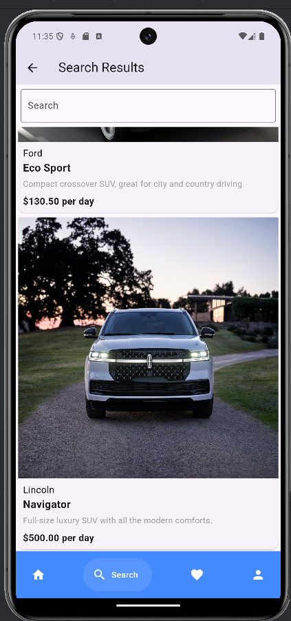
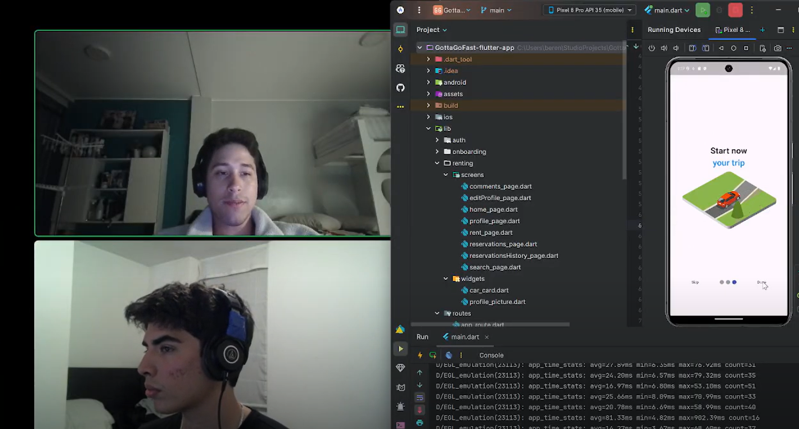

Ingeniería de Software - 202402
SI729 - Desarrollo de Aplicaciones Móviles - SW61
Profesor: Mayta Guillermo, Jorge Luis
INFORME DE TRABAJO FINAL - TB3
Universidad Peruana de Ciencias Aplicadas
Ingeniería de Software - 202402
SI729 - Desarrollo de Aplicaciones Móviles - SW61
Profesor: Mayta Guillermo, Jorge Luis
INFORME DE TRABAJO FINAL - TB3
Startup: AutoRentify
Producto: GottaGoFast
| Member | Code |
|---|---|
| Christian Renato Espinoza Saenz | U202213208 |
| Julio Esteban Elsner De La Torre Ugarte | U202111654 |
| Joaquin David Rivadeneyra Ramos | U202211846 |
| Alvaro Felipe Pinto Fuentes Rivera | U202213384 |
| Nelson Elías Serrano Ircañaupa | U202214733 |
| Versión | Fecha | Autor | Descripción de modificación |
|---|---|---|---|
| TB1 | 24/08/2024 | Todos los integrantes del equipo | Capítulo I, Capítulo II |
| TB2 | 15/09/2024 | Todos los integrantes del equipo | Capítulo III |
| TP | 26/09/2024 | Todos los integrantes del equipo | Capítulo IV |
| TB3 | 24/10/2024 | Todos los integrantes del equipo | Capítulo V |
El curso contribuye al cumplimiento del Student Outcome ABET:
ABET – EAC − Student Outcome 7 Aprendizaje Continuo y Autónomo
Criterio: La capacidad de adquirir y aplicar nuevos conocimientos según sea necesario, utilizando estrategias de aprendizaje apropiadas.
En el siguiente cuadro se describen las acciones realizadas y enunciados de conclusiones por parte del equipo, que permiten sustentar el haber alcanzado el logro del ABET – EAC − Student Outcome.
| Criterio específico | Acciones realizadas | Conclusiones |
|---|---|---|
| Actualiza conceptos y conocimientos necesarios para su desarrollo profesional y en especial para su proyecto en soluciones de software. | TB1: Joaquin David Rivadeneyra Ramos: Se llevó a cabo un estudio con el propósito de comprender en detalle el desafío que enfrentamos. Este proceso nos permitió identificar a los grupos de personas a los que nos enfocamos, entender sus necesidades particulares y desarrollar un producto que las satisfaga. TB2: Desarrolle una arquitectura de producto sólida para AutoRentify, que incluye la creación de guías de estilo generales para asegurar una identidad visual coherente y una experiencia de usuario intuitiva. Diseñé la arquitectura de la información con sistemas organizativos, etiquetas SEO y meta tags, y mecanismos de búsqueda y navegación eficientes, optimizando la estructura del contenido para mejorar la accesibilidad y visibilidad en motores de búsqueda, garantizando una interacción fluida y efectiva para los usuarios. TP: Mi trabajo en la configuración del entorno de desarrollo y la gestión del código fuente me permitió adquirir nuevas habilidades en la gestión de proyectos de software. La actualización constante de estos conceptos es esencial para asegurar un flujo de trabajo eficiente y organizado, especialmente en proyectos móviles como Gotta Go Fast. TB3: Para esta entrega, llevé a cabo el sprint planning, donde planifiqué las tareas a realizar en cada fase del proyecto. Junto con esto, incluí la evidencia de desarrollo, que muestra el progreso y las implementaciones realizadas hasta el momento. También realicé pruebas de testing, asegurando que todas las funcionalidades trabajen de manera correcta y cumplan con los requisitos establecidos. Julio Elsner: Se analizó a profundidad el negocio en la vida real y se evaluaron los casos para la creación de los dos segmentos objetivos mediante esto nos permitió a poder crear la lógica de negocio de la aplicación móvil y como el impacto al consumidor final. TB2: Me enfoque en mantener mis conocimientos actualizados para mejorar sus habilidades profesionales, especialmente en el desarrollo de soluciones de software. Esto se refleja en la capacidad para crear diagramas de clases y de bases de datos, esenciales para el diseño estructurado de sistemas de información y optimización de procesos empresariales. TP: Realice el proceso de validacion de ingreso a la aplicación movil, además de tener actualizado el front de la aplicación y el flujo de acciones de la aplicación tanto ingreso de credenciales como funcionalidades parciales del sistema. TB3: En este sprint, he realizado una mejora significativa y un cambio completo del software utilizado anteriormente, enfocándome en mejorar el despliegue. En esta ocasión, implementé un backend utilizando ASP.NET con C#. Este nuevo backend gestiona el IAM (Identity and Access Management) para el registro y autenticación de usuarios, además de manejar las funciones relacionadas con las rentas de vehículos. Nelson Elías Serrano TB1: Para esta primera versión, se investigaron recursos para formular el desarrollo del proyecto. Desde la problemática, aplicando técnicas de las 5w’s y 2h’s y de Lean UX TB2: Diseño de mock-ups y user flows diagrams para presentar los user goal de nuestro servicio al público objetivo. Además, explicar clara y detalladamente su función. TP: Realizar el proceso de construcción necesario para la elaboración del backend asociado a nuestro software, para ello se incluyeron lo establecido según nuestra base de datos y lo fundamental que empleará nuestra aplicación. TB3: Para este sprint, mejoré y cambié por completo el software usado anteriormente por temas de despliegue. Usando en esta ocasión asp.net con C#, este backend logra el iam para el registro y logeo de usuarios y las rentas de vehículos. Christian Renato Espinoza Saenz TB1: En esta versión, me encargué de desarrollar las historias de usuario y de crear los impact maps para cada segmento. Analizando a fondo ambos segmentos para asegurarme de que las historias de usuario y los maps se alinean con las necesidades y objetivos específicos de cada uno. TB2: Para este avance, investigué y analicé las mejores prácticas en diseño de interfaces de usuario para asegurar una experiencia intuitiva y atractiva en la landing page. Asimismo, aplique estas para el desarrollo de los wireframes de la aplicación . TP: Realicé el Testing Suite Evidence para la Sprint Review a través de un video, asegurando una validación integral de las funcionalidades implementadas y facilitando un proceso de revisión fluido y visualmente claro. TB3: En esta entrega, me encargué de mejorar el frontend, cambiando su funcionamiento y agregando nuevas funciones, como la opción de editar perfil y optimizando el proceso de renta. Alvaro Felipe Pinto Fuentes RiveraTB1: En esta entrega, mi trabajo fue desarrollar los empathy maps por cada segmento, además de supervisar el desarrollo de los Objetivos Smart y ayudar con la investigación para nuestra bibliografía asegurándonos de la veracidad de nuestras fuentes tomando en cuenta su cuartil. TB2: Para esta entrega me encargue de realizar el modelo C4 que incluyen los diagramas de contexto, contenedor y componentes, adcionalmente también me encargué de buscar la manera de realizar las correciones de los objetivos smart siguiendo la plantilla otorgada en el aula virtual. TP1: Al actualizarme en metodologías ágiles y herramientas de gestión, mejoré la planificación de sprints y la organización del backlog, lo que resultó en un proceso más eficiente y estructurado. Esto no solo impulsó el éxito del proyecto, sino que también fortaleció mis habilidades para enfrentar futuros desafíos en el ámbito del desarrollo de software. TB3: En esta entrega, mi trabajo fue realizar la page de home y busqueda de vehiculos en el front. |
TB1: Realizamos una investigación y un análisis detallado para impulsar nuestro proyecto de soluciones de software. Definimos los segmentos de mercado a los que nos dirigimos y comprendimos sus necesidades, lo que nos permitió crear soluciones innovadoras. Además, evaluamos el contexto del proyecto, identificamos obstáculos y examinamos las soluciones actuales para resaltar oportunidades de innovación. Este enfoque meticuloso nos asegura responder de manera eficaz a las demandas del mercado. También reconocemos la importancia de actualizar continuamente nuestros conocimientos para mantenernos al día en nuestro desarrollo profesional. TB2: Desarrollamos un análisis detallado para mejorar nuestras soluciones de software, definiendo un diseño de producto con guías de estilo coherentes y una arquitectura de la información optimizada, que incluye sistemas de organización, etiquetado, SEO, y navegación. Diseñamos la interfaz de la página de aterrizaje y mejoramos la UX/UI de aplicaciones móviles mediante wireframes, diagramas de flujo, prototipos y mock-ups. Además, empleamos una arquitectura de software orientada a dominios con diagramas de contexto, contenedores y componentes, y aplicamos diseño orientado a objetos, incluyendo diagramas de clases y de base de datos. Este enfoque integral garantiza nuestra capacidad de respuesta a las demandas del mercado y refuerza nuestro compromiso con la innovación y el aprendizaje continuo en el desarrollo profesional. TP: El desarrollo de Gotta Go Fast ha evidenciado la importancia del aprendizaje continuo en el ámbito de las soluciones de software, especialmente en un entorno tecnológico que evoluciona rápidamente. Durante este proyecto, se ha reconocido que para mantener la competitividad y garantizar la calidad del producto final, es crucial mantenerse al día con las mejores prácticas y nuevas tecnologías, como el uso de Flutter para aplicaciones móviles.La integración de metodologías ágiles, la gestión eficiente del código, y la implementación de herramientas avanzadas para la configuración y despliegue de software, son habilidades que requieren actualización constante. El aprendizaje continuo no solo mejora el desempeño profesional, sino que también permite adaptarse a las demandas cambiantes de los proyectos y del mercado.Este proyecto subraya que el aprendizaje permanente no es solo un requisito, sino una ventaja estratégica para enfrentar los retos que presentan las soluciones de software, garantizando que el producto final, como Gotta Go Fast, cumpla con los estándares de calidad y eficiencia requeridos en la industria. TB3: La actualización constante de conceptos y conocimientos es vital para el desarrollo profesional y, en particular, para proyectos como Gotta Go Fast, donde la velocidad y la eficiencia son cruciales. Mantenerse al día con las últimas herramientas y tecnologías permite a los desarrolladores optimizar sus aplicaciones, garantizando soluciones más robustas e innovadoras. Esto asegura que productos como Gotta Go Fast respondan adecuadamente a las demandas del mercado y ofrezcan una experiencia superior al usuario. |
| Reconoce la necesidad del aprendizaje permanente para el desempeño profesional y el desarrollo de proyectos en soluciones de software. | TB1: Joaquin David Rivadeneyra Ramos: Se preparó un informe detallado que cubrió desde la identificación del problema hasta la propuesta de estrategias de solución. Esto resalta la importancia de seguir aprendiendo para crecer profesionalmente en proyectos de software. TB2: Al desarrollar este trabajo, comprendí profundamente que el aprendizaje continuo es clave para mantenerse actualizado con las últimas tendencias tecnológicas y herramientas en el campo de la ingeniería de software. Este compromiso con la actualización constante de conocimientos me permite abordar los desafíos de los proyectos desde perspectivas más innovadoras y eficientes, aplicando nuevas metodologías y soluciones adaptadas a las demandas actuales del mercado. Al integrar este enfoque de mejora continua, se asegura no solo una mayor competitividad en el ámbito profesional, sino también un crecimiento sostenido y una capacidad para liderar iniciativas con éxito en un entorno en constante evolución. TP: Este proyecto me permitió reconocer que el aprendizaje continuo es indispensable para mantenerse competitivo. La rápida evolución de las herramientas y metodologías de desarrollo requiere que, como profesional, esté constantemente actualizando mis conocimientos, especialmente en plataformas emergentes como Flutter. TB3: Para esta entrega, diseñé las entrevistas para recopilar información sobre la experiencia del usuario, realicé una evaluación heurística para identificar problemas de usabilidad, y creé un video explicativo sobre el producto, destacando sus características y valor para los usuarios. Todo esto busca optimizar la experiencia y aumentar la satisfacción del cliente. Julio Elsner: En base al análisis de negocio se implementó un esquema con herramientas de diseño para lograr nuestro objetivo final. Añadido a esto, se plantearon preguntas a los dos segmentos objetivos para lograr una visión más detallada de los requerimientos de los usuarios. TB2: Al realizar este trabajo comprendí que el aprendizaje continuo es fundamental para mantenerse al día con las tendencias tecnológicas y herramientas actuales en la ingeniería de software. Su enfoque en la actualización constante de conocimientos le permite abordar proyectos con enfoques más innovadores y eficientes, garantizando su competitividad y éxito en el campo profesional. TP: Investigar sobre las nuevas bibliotecas en flutter con la finalidad de poder mejorar la experiencia de usuario haciendo una aplicación movil mas amigable y una interfaz mas facil de usar. TB3: Reconozco la importancia del aprendizaje continuo para mantenerme al día con las tendencias tecnológicas y mejorar mis habilidades profesionales, especialmente en el desarrollo de proyectos de software. Este enfoque me permite enfrentar nuevos desafíos con soluciones innovadoras y optimizadas. Nelson Elías Serrano TB1: Para seguir progresando con el proyecto es fundamental probar las hipótesis planteadas según Lean UX. Además, a través del Canvas, respondemos las preguntas planteadas para formular el propósito de nuestro proyecto y abarcarlo de la mejor manera. TB1: Para seguir progresando con el proyecto es fundamental probar las hipótesis planteadas según Lean UX. Además, a través del Canvas, respondemos las preguntas planteadas para formular el propósito de nuestro proyecto y abarcarlo de la mejor manera.TB2: Prototipado para realizar el proceso de creación de la aplicación móvil. Esto se realizó considerando varios puntos anteriores desde la guía de estilos, las necesidades de usuario y diseños marcados por las tendencias actuales del mercado. TP: Investigar el proceso de desplegar el servicio de nuestro api a la nube para poder realizar la conexión con nuestra aplicación, esto se logró gracias a servicios gratuitos en la nube que cumplían con nuestros requisitos. TB3: Para este proceso me dediqué a cómo implementar un backend más funcional para cumplir con lo realizado en el frontend, teniendo un iam con le registro necesario y las rentas que se pueden realizar con los autos Christian Renato Espinoza Saenz TB1: Me encargué de realizar una entrevista dirigida al segmento de administradores de talleres, donde profundicé en el ámbito de la automotriz. A través de esta entrevista, aprendí e investigué en detalle sobre las necesidades, desafíos y oportunidades que enfrentan los administradores en su día a día. TB2: Para esta entrega, tuve en cuenta los diferentes segmentos de usuarios al crear los wireframes y desarrollé el diagrama de flujo de la aplicación para optimizar la navegación y la experiencia del usuario. TP: Realicé el Development Evidence para la Sprint Review, presentando de manera clara y organizada los avances del desarrollo a través de informes detallados y asegurando que todos los desafíos fueran abordados integralmente. TB3: Para esta entrega, elaboré una guía de estilo y convenciones de código, especificando los lenguajes y las prácticas utilizadas en el desarrollo de la landing page, así como en el frontend y el backend. Alvaro Felipe Pinto Fuentes Rivera TB1: Se indagó en la perspectiva de cada usuario para descubrir que sienten, piensan, ven o hacen. TB2: En el desarrollo de esta entrega, pude comprender que es importante revisar constantemente noticias o actualizaciones para desempeñarse correctamente en cualquier rubro, por ejemplo, si usamos una plantilla o metodo desactualizado no se estaría siendo muy profesional lo que empobrece la calidad del trabajo. TP1: Reconozco la importancia del aprendizaje continuo en el desempeño profesional, especialmente al realizar tareas como la planificación de sprints y la creación del backlog en proyectos de software. Estas actividades requieren mantenerse actualizado sobre nuevas metodologías y herramientas, lo que permite optimizar el desarrollo de soluciones eficientes y adaptables. La mejora constante no solo asegura el éxito de los proyectos actuales, sino que también impulsa la capacidad de enfrentar nuevos retos y aportar valor en el futuro. TB3: Se buscaron formas de trabajo efectivos para la realizacion del trabajo en el github ademas de recopilar nuestros diferentes medios de comunicación. |
TB1: Alcanzamos logros significativos en el avance de nuestro proyecto. Hemos transformado nuestras ideas y propuestas en un plan detallado, abordando de manera integral los desafíos que se nos presentan. Además, hemos creado informes exhaustivos que incluyen investigaciones sobre el problema, análisis de la competencia, así como propuestas y estrategias de solución. Estos informes están organizados de manera clara y objetiva, proporcionando una base sólida para el progreso de nuestro proyecto. En resumen, hemos demostrado un compromiso sólido con la calidad y la exhaustividad. TB2: Logramos avances significativos en el desarrollo de nuestro proyecto, transformando nuestras ideas iniciales en un plan detallado que aborda de manera integral los desafíos encontrados. En el Capítulo III, creamos una arquitectura robusta y bien definida que incluye un diseño de producto completo con guías de estilo, una arquitectura de la información optimizada, y mejoras en la experiencia de usuario para nuestras aplicaciones. Asimismo, desarrollamos una arquitectura de software orientada a dominios y un diseño orientado a objetos que incorpora diagramas de clases y bases de datos. Estos elementos están organizados de manera coherente y exhaustiva, estableciendo una base sólida para el avance continuo del proyecto. En resumen, hemos demostrado un claro compromiso con la mejora continua, la innovación y la calidad en todas las etapas del desarrollo. TP El desarrollo de la aplicación Gotta Go Fast en Flutter ha permitido actualizar conocimientos clave en el ámbito de las soluciones de software y mejorar habilidades fundamentales para el desarrollo profesional. A través de la implementación del backend, se ha fortalecido la capacidad para gestionar la configuración del software, específicamente en un entorno multiplataforma como Flutter, lo que asegura una integración más eficiente entre el frontend y el backend.El uso de Flutter para Gotta Go Fast, junto con la gestión ágil de los sprints, ha demostrado ser una estrategia eficaz para el desarrollo de aplicaciones móviles, permitiendo entregar resultados consistentes y de alta calidad en tiempos ajustados. La planificación y la ejecución de los sprints, así como la documentación de las evidencias, han sido clave para asegurar la continuidad y coherencia del proyecto, mejorando la capacidad de resolución de problemas y facilitando la iteración rápida en el desarrollo del producto.Finalmente, este trabajo ha permitido aplicar tanto conceptos teóricos como prácticos para el desarrollo de Gotta Go Fast, proporcionando una base sólida para enfrentar proyectos futuros con una mayor confianza y capacidad técnica en la construcción de aplicaciones con Flutter. TB3 El aprendizaje permanente es esencial para el desempeño profesional en el campo de las soluciones de software, especialmente en proyectos como Gotta Go Fast, donde la innovación y la rapidez son clave. Adaptarse a nuevas tecnologías y metodologías permite desarrollar aplicaciones más ágiles y eficientes, manteniéndose a la vanguardia del mercado. Reconocer esta necesidad impulsa a los profesionales a actualizarse continuamente, mejorando así su capacidad para ofrecer soluciones efectivas y de alto rendimiento. |
| Nombre del estudiante | Descripción del objetivo | Fecha de inicio | Fecha de cumplimiento esperada | Specific Específico 0 |
Measurable Medible |
Ambitious Ambicioso |
Relevant Relevante |
Time-bound Tiempo Límite |
|---|---|---|---|---|---|---|---|---|
| Christian Renato Espinoza Saenz | Desarrollar una aplicación móvil para la startup de renta de vehículos con una interfaz intuitiva para los usuarios. | Thursday, August 29, 2024 | Wednesday, November 27, 2024 | Se va a desarrollar una aplicación móvil con una interfaz de usuario intuitiva y fácil de usar que permita a los usuarios navegar, buscar y alquilar vehículos de manera eficiente. Esto garantizará una mejor experiencia de usuario y facilitará la adopción de la app | Completar el desarrollo de la interfaz dentro del plazo acordado, con un 95% de satisfacción en pruebas de usabilidad. | El objetivo es ambicioso porque busca no solo completar el desarrollo, sino también optimizar la experiencia del usuario para generar mayor retención. | Está alineado con la estrategia de la startup al mejorar la facilidad de uso, lo que directamente impacta la satisfacción del cliente. | La aplicación debe estar completa en 5 meses. |
| Julio Esteban Elsner De La Torre Ugarte | Implementar un sistema de backend robusto que permita gestionar eficientemente las solicitudes de renta. | Thursday, August 29, 2024 | Wednesday, November 27, 2024 | Se va a implementar un backend robusto y optimizado que gestione eficientemente las solicitudes de alquiler de vehículos, permitiendo una respuesta rápida y asegurando la correcta operación del sistema de inventario en tiempo real | Reducir el tiempo de respuesta del servidor a menos de 2 segundos para el 95% de las solicitudes. | Involucra la optimización de infraestructura, lo cual va más allá de solo construir un backend básico. | El sistema eficiente es clave para ofrecer una experiencia rápida y fluida a los usuarios, lo que está alineado con los objetivos de la startup. | Implementación en 5 meses. |
| Joaquin David Rivadeneyra Ramos | Integrar un sistema de pago seguro y eficiente en la aplicación móvil. | Thursday, August 29, 2024 | Wednesday, November 27, 2024 | Se va a integrar un sistema de pago seguro, rápido y eficiente que permita a los usuarios completar transacciones con facilidad, garantizando la seguridad de los datos financieros y mejorando la confianza en la plataforma. | El sistema debe aprobar el 100% de las auditorías de seguridad y permitir pagos en menos de 3 clics. | No solo se busca la funcionalidad del sistema, sino que también cumpla con estándares de seguridad internacionales. | Los pagos son esenciales para el modelo de negocio de la startup, y la seguridad es un punto clave para ganarse la confianza del cliente. | 3 meses para tener el sistema operativo y auditado. |
| Alvaro Felipe Pinto Fuentes Rivera | Diseñar y ejecutar una estrategia de marketing digital para lanzar la aplicación. | Thursday, August 29, 2024 | Wednesday, November 27, 2024 | Se va a diseñar y ejecutar una estrategia de marketing digital que posicione la app de renta de vehículos en el mercado, incrementando la visibilidad y alcanzando 10,000 descargas en los primeros seis meses, con una alta tasa de conversión de usuarios activos. | Alcanzar 10,000 descargas en los primeros 6 meses con una tasa de conversión del 15%. | Más allá de solo lanzar la campaña, se busca alcanzar una base de usuarios sólida en un corto periodo. | El éxito del marketing impacta directamente el crecimiento inicial de la aplicación, lo cual es crucial para la startup. | La campaña debe estar lista en 2 meses, con resultados tangibles en 6 meses. |
| Serrano Ircañaupa, Nelson Elías | Implementar un sistema de evaluación de vehículos que permita a los usuarios calificar y dejar reseñas. | Thursday, August 29, 2024 | Wednesday, November 27, 2024 | Se va a implementar un sistema de evaluación y reseñas en la aplicación que permita a los usuarios calificar su experiencia de alquiler, generando una calificación promedio de 4/5, lo que contribuirá a aumentar la confianza y transparencia en la plataforma. | El sistema debe ser utilizado por el 80% de los usuarios activos y generar una calificación promedio de 4/5. | El reto no es solo implementar el sistema, sino lograr que los usuarios lo utilicen de manera constante y obtener una alta satisfacción. | Las reseñas mejoran la confianza entre arrendadores y arrendatarios, lo cual es fundamental para el éxito del negocio. | El sistema debe estar activo en 4 meses. |
AutoRentify es una startup dedicada a revolucionar la manera en que las personas alquilan vehículos. A través de nuestra aplicación móvil, ofrecemos una experiencia de alquiler ágil, segura y accesible, adaptada a las necesidades modernas. Nuestra plataforma conecta a usuarios con una amplia red de proveedores de autos, garantizando una amplia variedad de opciones y precios competitivos. AutoRentify se enfoca en la simplicidad y la eficiencia, eliminando las complicaciones tradicionales del proceso de alquiler y brindando a los usuarios control total desde la palma de su mano.
Misión:
Facilitar el acceso a una experiencia de alquiler de autos rápida, confiable y personalizada mediante el uso de tecnología innovadora. Nuestro objetivo es empoderar a los usuarios con una plataforma intuitiva que les permita encontrar y alquilar el vehículo perfecto para sus necesidades de manera eficiente, desde cualquier lugar y en cualquier momento.
Visión:
Convertirnos en la plataforma líder en alquiler de autos, redefiniendo la industria con un enfoque en la conveniencia y la transparencia. Aspiramos a construir una comunidad global de usuarios satisfechos que confían en AutoRentify para todas sus necesidades de movilidad, promoviendo al mismo tiempo un modelo de negocio sostenible y tecnológicamente avanzado.
| Integrante | Perfil | Foto |
|---|---|---|
| Elsner De La Torre Ugarte (u202111654) | Mi nombre es Julio Elsner De La Torre Ugarte, tengo 19 años y soy estudiante de la carrera de ingeniería de software. Con anterioridad ya he tenido experiencia con el tipo de trabajos que conllevan trabajo grupal y que busca una solución a alguna problemática. En mi opinión, soy bastante hábil extrayendo información de algún problema lo cual mejora el trabajo conjunto en grupo y la organización en general. |  |
| Rivadeneyra Ramos, Joaquin David (U202211846) | Soy Joaquin Rivadeneyra, tengo 19 años y actualmente estoy cursando el 5to ciclo de la carrera de Ingeniería de Software. Me considero una persona comunicativa y abierta a nuevas ideas, lo que me permite tener una buena relación con los demás miembros del equipo y fomentar un ambiente de trabajo colaborativo. | |
| Espinoza Saenz, Christian Renato (U202213208) | Mi nombre es Christian Espinoza, soy un estudiante de 19 años que cursa el 6to ciclo de la carrera Ingeniería de Software. Poseo ideas únicas e innovadoras para que el trabajo logre sobresalir. Tengo experiencia en la creación de distintos tipos de diagramas, editar diferentes tipos de multimedia como videos, y un conocimiento general en programación de C++, HTML, CSS y SQL, que será beneficioso para el proyecto. |  |
| Pinto Fuentes Rivera Alvaro (U202213384) | Hola, mi nombre es Alvaro, soy un estudiante del quinto ciclo de la carrera Ingeniería de Software. Me gusta mucho leer, sobretodo el género de fantasía y ciencia ficción, mi frase favorita de un libro es el credo "Vida antes que muerte, fuerza antes que debilidad y viaje antes que destino", también soy un gran fan del cine y pasó la mayor parte de mi tiempo libre escribiendo por diversión. Poseo un nivel bueno de programación en los lenguajes de C# y C++, creo que podré resultar de gran ayuda durante el desarrollo del proyecto, así como podré brindar ideas creativas para el equipo. |  |
| Nelson Elías Serrano (U202214733) | Me llamo Nelson Serrano, estudiante de Ingeniería de Software con el código estudiantil U202214733. Mi carrera se basa en crear soluciones digitales e innovadoras para distintas problemáticas del mundo real . Las habilidades en las que puedo aportar en el grupo son dominio y práctica de lenguajes de programación como C++ y python, documentación de proyectos y metodologías ágiles y conocimientos básicos de base de datos. |   |
1.2. Solution Profile
1.2.1 Antecedentes y problemática
Antecedentes
El alquiler de autos ha sido una solución popular para satisfacer necesidades de movilidad a corto plazo, especialmente en situaciones donde el transporte público no es viable o conveniente. Sin embargo, el proceso tradicional de alquiler de autos puede ser engorroso y confuso, con múltiples pasos, falta de transparencia en precios y disponibilidad, y un servicio al cliente inconsistente. La digitalización y el auge de las aplicaciones móviles han comenzado a transformar la industria, pero aún existen áreas significativas de mejora, especialmente en la personalización de servicios y la accesibilidad para una base de usuarios más amplia.
Problemática
El alquiler de autos tradicional enfrenta varios desafíos que afectan tanto a los usuarios como a los proveedores de servicios. Los procesos suelen ser complejos y opacos, con numerosos pasos que pueden resultar confusos para los usuarios. Esto incluye la dificultad para comparar precios y opciones, la falta de transparencia en la disponibilidad de vehículos, y un servicio al cliente que puede variar en calidad. Además, la experiencia de reserva y gestión de vehículos a menudo no se alinea con las expectativas de comodidad y eficiencia de los consumidores modernos. Todo esto contribuye a una experiencia de usuario insatisfactoria y a una falta de fidelización en el sector.
Who? (¿Quién?)
¿Quiénes enfrentan desafíos en el alquiler de autos?
Los consumidores que buscan alquilar vehículos para diversos propósitos (viajes, eventos, uso personal) y las empresas de alquiler de autos que desean mejorar su alcance y eficiencia operativa.
What? (¿Qué?)
¿Qué aspectos del proceso de alquiler de autos necesitan mejorar?
La transparencia en los precios, la disponibilidad en tiempo real, la simplicidad del proceso de reserva, la personalización de las opciones de vehículos, y la calidad del servicio al cliente.
Where? (¿Dónde?)
¿Dónde se deben implementar las mejoras en el alquiler de autos?
Principalmente en áreas urbanas y destinos turísticos con alta demanda de alquiler de vehículos, y también en regiones menos cubiertas que podrían beneficiarse de un acceso más fácil a servicios de alquiler.
When? (¿Cuándo?)
¿Cuándo es el momento ideal para introducir una nueva solución en el mercado de alquiler de autos?
Durante períodos de alta demanda como vacaciones, eventos especiales, o durante el crecimiento del mercado de movilidad compartida, cuando los consumidores están más abiertos a probar nuevas soluciones tecnológicas.
Why? (¿Por qué?)
¿Por qué es necesaria una nueva solución en el alquiler de autos?
Porque el proceso actual es a menudo complicado y poco transparente, lo que genera frustración en los usuarios y pérdida de oportunidades para los proveedores. La demanda de soluciones más eficientes y tecnológicas está en aumento, y no se está satisfaciendo adecuadamente.
How? (¿Cómo?)
¿Cómo solucionará nuestra aplicación los problemas existentes en el alquiler de autos?
AutoRentify simplifica el proceso mediante una interfaz intuitiva que permite la búsqueda, comparación y reserva de vehículos en tiempo real. La aplicación ofrece precios claros, opciones personalizadas, y un servicio al cliente eficiente para mejorar la experiencia general del usuario.
How Much?
¿Cuánto costará implementar y mantener esta solución?
El costo incluye el desarrollo tecnológico, marketing, y la formación de alianzas con proveedores de autos. A través de un modelo de negocio basado en comisiones, suscripciones, y servicios adicionales, se busca asegurar que la solución sea rentable tanto para la startup como para sus socios comerciales.
El proceso de alquiler de autos tradicionalmente implica múltiples pasos, incluyendo la búsqueda en varios sitios, la comparación de precios y la confirmación de disponibilidad, lo que puede resultar en un proceso engorroso y poco transparente para los usuarios.
Las soluciones actuales a menudo carecen de una interfaz unificada y fácil de usar para comparar opciones, ver precios claros y realizar reservas de manera eficiente. Esto genera frustración en los usuarios y una experiencia inconsistente.
Nuestro producto abordará esta brecha mediante una aplicación móvil, AutoRentify, que ofrece una interfaz intuitiva para buscar, comparar y reservar autos de manera rápida y transparente. La aplicación proporcionará información clara sobre precios, disponibilidad en tiempo real, y opciones personalizadas para mejorar la experiencia del usuario.
Nuestro enfoque inicial será dirigido a usuarios de áreas urbanas y destinos turísticos que buscan una solución eficiente y confiable para alquilar vehículos, así como empresas de alquiler de autos que buscan optimizar su alcance y procesos operativos.
Sabremos que tenemos éxito cuando alcancemos una tasa de adopción del 30% entre los usuarios objetivo después de la implementación inicial y logremos un índice de satisfacción del cliente superior al 80%, medido a través de encuestas y feedback dentro de los primeros seis meses de lanzamiento
Business Assumptions:
User Assumptions:
Business Outcomes:
Lograr que el 25% de los usuarios objetivo en áreas urbanas y destinos turísticos adopten la aplicación dentro del primer año de lanzamiento. Asegurar que al menos el 60% de los usuarios registrados utilicen la aplicación al menos una vez por cada período de viaje o necesidad de alquiler. Observar que más del 50% de los usuarios utilizan las funciones de comparación de precios y reserva en tiempo real al menos una vez al mes. Mantener una tasa de retención del 75% entre los usuarios que han realizado al menos una reserva a través de la aplicación. Lograr un aumento del 15% en el número de usuarios activos mensuales durante el segundo año después del lanzamiento. Recibir una valoración positiva en el 85% de las encuestas de satisfacción enviadas a los usuarios después de completar una reserva.
User Outcomes:
Features:
Hipótesis 1:
Creemos que lograremos que el 25% de los usuarios objetivo en áreas urbanas y destinos turísticos adopten la aplicación dentro del primer año de lanzamiento.
Si los usuarios de estas áreas.
Logran encontrar y reservar vehículos de alquiler de manera rápida y transparente.
Con una interfaz intuitiva que ofrezca precios claros y disponibilidad en tiempo real.
Hipótesis 2:
Creemos que al menos el 60% de los usuarios registrados utilizarán la aplicación al menos una vez por cada período de viaje o necesidad de alquiler.
Si los viajeros frecuentes y personas con necesidades ocasionales de alquiler.
Logran personalizar sus opciones de búsqueda y reservas de manera eficiente.
Con filtros avanzados que les permitan seleccionar vehículos según sus preferencias y necesidades específicas.
Hipótesis 3:
Creemos que más del 50% de los usuarios utilizarán las funciones de comparación de precios y reserva en tiempo real al menos una vez al mes.
Si los usuarios.
Logran acceder fácilmente a información actualizada y comparar múltiples opciones de vehículos.
Con una funcionalidad de comparación de precios que muestre opciones claras y transparentes en tiempo real.
Hipótesis 4:
Creemos que mantendremos una tasa de retención del 75% entre los usuarios que han realizado al menos una reserva a través de la aplicación.
Si los usuarios.
Logran tener una experiencia de reserva sin fricciones y sentirse respaldados por un soporte al cliente confiable.
Con un proceso de reserva simplificado y un servicio de atención al cliente accesible y eficiente.
Hipótesis 5:
Creemos que recibiremos una valoración positiva en el 85% de las encuestas de satisfacción enviadas a los usuarios después de completar una reserva.
Si los usuarios.
Logran completar sus alquileres sin problemas y perciben que el servicio añade valor a su experiencia de viaje.
Con un diseño de experiencia de usuario que priorice la facilidad de uso, la claridad de la información y la rapidez en el proceso de reserva.

LINK LEAN UX CANVAS: https://miro.com/app/board/uXjVKnG08sE=/?share_link_id=250310705435
Segmento objetivo #1: Personas Interesadas en Alquilar Vehículos
Aspectos demográficos:
Aspectos geográficos:
Aspectos psicográficos:
Segmento objetivo #2: Empresas de Alquiler de Autos
Aspectos demográficos:
Aspectos geográficos:
Aspectos psicográficos:
Estos segmentos objetivo permiten a AutoRentify enfocar sus esfuerzos de desarrollo, marketing y ventas en satisfacer las necesidades específicas de sus principales audiencias.
Este análisis se lleva a cabo para investigar, analizar y comparar el comportamiento de los competidores directos o indirectos en el mercado. Entender la dinámica competitiva es esencial para identificar las fortalezas y debilidades de nuestra empresa en relación con otras marcas. Al realizar este análisis, podemos descubrir oportunidades para mejorar nuestros productos y servicios, así como para diferenciar nuestra oferta en un mercado saturado. Además, permite anticipar movimientos estratégicos de los competidores, lo que es vital para tomar decisiones informadas y mantener una ventaja competitiva. También es útil para identificar tendencias del mercado y adaptarse a las necesidades cambiantes de los consumidores, asegurando que nuestra empresa no solo sobreviva, sino que prospere en un entorno competitivo. Por último, el análisis competitivo nos ayuda a desarrollar estrategias de marketing más efectivas y a optimizar los recursos para maximizar el retorno de la inversión.
Algunos de los competidores a los que Gotta Go Fast podría enfrentarse son:
| Competitive Analysis Landscape | |||||||||||||||
|---|---|---|---|---|---|---|---|---|---|---|---|---|---|---|---|
| ¿Por qué llevar a cabo este análisis? | Este análisis se lleva a cabo para investigar, analizar y comparar el comportamiento de los competidores directos o indirectos en el mercado de alquiler de vehículos. | ||||||||||||||
| Nombre | Gotta Go Fast | Hertz | Avis | Enterprise | |||||||||||
| Logo |  |  |  |  | |||||||||||
| Perfil | Overview | Plataforma diseñada para simplificar el alquiler de vehículos, ofreciendo una amplia gama de coches y una interfaz intuitiva para realizar reservas rápidas. También cuenta con un plan de suscripción para usuarios regulares. | Una de las compañías líderes a nivel mundial en alquiler de vehículos, conocida por su amplia red de sucursales y variedad de coches, con un enfoque en la conveniencia y la flexibilidad del cliente. | Empresa especializada en el alquiler rápido y conveniente de coches, con opciones de alquiler a corto y largo plazo. Ofrece programas de fidelización y servicios adicionales. | Una de las empresas más grandes en el mercado global de alquiler de vehículos, con una extensa selección de coches y servicios adicionales como alquiler a domicilio. Se enfoca en ofrecer opciones flexibles y convenientes para todos los clientes. | ||||||||||
| Ventaja competitiva ¿Qué valor ofrece a los clientes? | Rapidez en el proceso de alquiler, una amplia selección de vehículos, opciones de entrega a domicilio, y precios competitivos con un plan de suscripción premium. | Amplia red de ubicaciones, variedad de vehículos, y programas de fidelización para clientes frecuentes. | Proceso de alquiler eficiente, acceso a una gama diversa de coches, y un sólido programa de fidelización. | Extensa red global, opciones de alquiler flexibles, y servicios adicionales como el alquiler a domicilio y planes de suscripción. | |||||||||||
| Perfil de Marketing | Mercado objetivo | Viajeros frecuentes, turistas, conductores ocasionales, y suscriptores de servicios de transporte. | Viajeros de negocios, turistas, y clientes corporativos. | Turistas, viajeros de negocios, y usuarios regulares de servicios de alquiler de vehículos. | Turistas, familias, viajeros de negocios, y clientes corporativos. | ||||||||||
| Estrategias de Marketing | Marketing digital, promociones para suscriptores, alianzas con hoteles y aerolíneas, y presencia en redes sociales. | Publicidad en aeropuertos, promociones para clientes frecuentes, y colaboraciones con empresas de viajes. | Promociones en línea, programas de lealtad, y campañas de marketing digital. | Publicidad global, programas de fidelización, y promociones en línea. | |||||||||||
| Perfil de producto | Productos y Servicios | Alquiler de vehículos, suscripción premium, entrega a domicilio, y soporte 24/7. | Alquiler de vehículos, programas de fidelización, y opciones de alquiler a largo plazo. | Alquiler de coches, opciones de seguro, y programas de fidelización. | Alquiler de vehículos, alquiler a domicilio, y suscripción premium. | ||||||||||
| Precios y Costos | Ofrece tarifas competitivas con descuentos para suscriptores. El plan premium tiene un costo mensual de $29.99 USD. | Tarifas de alquiler varían según el vehículo y la ubicación, con programas de fidelización que ofrecen descuentos. | Tarifas competitivas, con descuentos disponibles a través de programas de lealtad y promociones estacionales. | Varía según el tipo de vehículo y duración del alquiler, con descuentos para suscriptores y usuarios frecuentes. | |||||||||||
| Canales de distribución | - Página web - Aplicaciones móviles en dispositivos iOS y Android. | - Sucursales físicas - Página web - Aplicaciones móviles | - Sucursales físicas - Página web - Aplicaciones móviles | - Sucursales físicas - Página web - Aplicaciones móviles | |||||||||||
| Análisis FODA | Fortalezas | - Rapidez y conveniencia - Amplia selección de vehículos - Plan de suscripción premium | - Red global de ubicaciones - Amplia gama de vehículos - Reputación consolidada | - Procesos de alquiler eficientes - Amplia red de ubicaciones - Programas de fidelización sólidos | - Red global - Flexibilidad de opciones - Servicios adicionales | ||||||||||
| Debilidades | - Competencia feroz - Dependencia de la tecnología | - Precios relativamente altos - Procesos de alquiler a veces lentos | - Tarifas más altas - Competencia intensa | - Tarifas relativamente altas - Competencia | |||||||||||
| Oportunidades | - Expansión internacional - Alianzas estratégicas - Innovación tecnológica | - Crecimiento en mercados emergentes - Innovación en servicios - Expansión de la red | - Expansión en mercados emergentes - Innovación en procesos de alquiler | - Expansión en nuevos mercados - Colaboraciones estratégicas | |||||||||||
| Amenazas | - Competencia de otras plataformas de alquiler - Cambios en la tecnología - Regulaciones locales | - Cambios en las regulaciones - Competencia de empresas emergentes - Disrupción tecnológica | - Competencia de nuevas plataformas - Cambios en la regulación | - Competencia de nuevas plataformas de alquiler - Cambios en la regulación | |||||||||||
Hemos empleado un análisis FODA para identificar las posibilidades y desafíos en el mercado, así como para evaluar nuestras fortalezas y debilidades internas. Esta metodología nos ha permitido concebir estrategias y tácticas que se ajusten de manera coherente a nuestro entorno y a los recursos disponibles.
Estrategia de distinción:
Para destacar en el mercado de alquiler de vehículos, hemos decidido implementar un servicio premium que se centre en la conveniencia y la personalización. Esto incluye la opción de entrega del vehículo directamente en la ubicación del cliente, ya sea en su hogar, oficina, o cualquier lugar de su elección. Además, ofreceremos un sistema de reservas ultrarrápido a través de nuestra aplicación, donde los usuarios pueden realizar reservas en menos de un minuto. Como parte de nuestra oferta diferenciada, Gotta Go Fast permitirá a los usuarios elegir entre una flota de vehículos exclusivos y de alta gama para experiencias de conducción excepcionales. También planeamos implementar un programa de fidelización que recompense a los usuarios frecuentes con descuentos y ventajas exclusivas, como upgrades de vehículos y acceso prioritario en temporadas altas.
Estrategia de liderazgo en costos:
Nos enfocaremos en optimizar nuestros costos operativos para poder ofrecer tarifas competitivas que atraigan a una amplia gama de clientes. Esto implicará la adopción de tecnologías de gestión de flotas más eficientes, la negociación de acuerdos favorables con proveedores de vehículos y la reducción de gastos mediante la automatización de procesos administrativos. Al reducir costos, Gotta Go Fast puede ofrecer precios más accesibles sin sacrificar la calidad del servicio, lo que nos permitirá atraer a clientes sensibles al precio, especialmente en segmentos de mercado como los turistas y los conductores ocasionales que buscan un equilibrio entre costo y conveniencia.
Estrategia de mercadotecnia:
Implementaremos una campaña de marketing digital enfocada en aumentar la visibilidad de nuestra aplicación entre los usuarios que buscan soluciones rápidas y convenientes para el alquiler de vehículos. Nuestras estrategias incluirán publicidad dirigida en plataformas como Google Ads, Instagram, y Facebook, donde nos enfocaremos en captar la atención de usuarios interesados en el turismo, los deportes automovilísticos, y la movilidad urbana. Además, planeamos colaborar con influencers en el ámbito del viaje y la automoción para promocionar nuestras ofertas especiales y destacar la facilidad de uso de nuestra aplicación. También lanzaremos promociones, como descuentos en la primera reserva y beneficios adicionales para quienes opten por nuestro plan de suscripción premium, para incentivar a nuevos usuarios a probar Gotta Go Fast.
Tácticas:
Nuestras tácticas incluyen la implementación de estudios de mercado continuos para identificar las preferencias y necesidades no satisfechas de los usuarios en el sector de alquiler de vehículos. Esta investigación nos permitirá ajustar nuestro servicio para satisfacer de manera más efectiva las demandas del mercado, asegurando que Gotta Go Fast se mantenga competitivo y relevante. Adicionalmente, planeamos realizar pruebas A/B para optimizar nuestras campañas publicitarias y ajustar nuestras ofertas en función de la respuesta del mercado. Esto, junto con un enfoque en la experiencia del cliente y la facilidad de uso de la aplicación, nos permitirá diferenciar a Gotta Go Fast de otros competidores y brindar un servicio que exceda las expectativas de nuestros usuarios.
Entrevistado #1:
 Andres Valle Zuta
Andres Valle Zuta
● Sexo: Masculino
● Edad: 21 años
● Distrito en el que vive: Surco
● Nivel socioeconómico: Clase B Entrevista:
● Link: Click para ver entrevista
● Momento en el que inicia: 0:00
● Duración: 6:03
● Entrevistador: Rivadeneyra Ramos, Joaquin David
Resumen:
Andrés Valle Zuta lleva un estilo de vida urbano en la ciudad, utilizando principalmente transporte público y aplicaciones de movilidad, sin interés en comprar un coche debido a los costos y la conveniencia del transporte alternativo. Alquila vehículos ocasionalmente, prefiriendo pequeños o SUV por días, y valora la facilidad de reservar a través de apps, destacando la importancia del precio, la variedad de vehículos y la opción de entrega a domicilio. Aunque ha experimentado retrasos en la entrega de vehículos, considera crucial la posibilidad de gestionar todo desde una aplicación, ver reseñas, acceder a soporte al cliente y recibir notificaciones de promociones, lo que aumentaría la probabilidad de que recomiende el servicio.
Entrevistado #2:

Nombre: Miguel Lopez
● Sexo: Masculino
● Edad: 21 años
● Distrito en el que vive: Lima
● Nivel socioeconómico: Clase B
Entrevista:
● Link: Click para ver entrevista
● Momento en el que inicia: 0:00
● Duración: 5:51
Resumen:
Miguel López, un turista mexicano, llega a Lima, Perú, con la intención de conocer su rica cultura, disfrutar de la gastronomía local y visitar lugares emblemáticos como Machu Picchu y el Valle Sagrado. Planea quedarse dos semanas y, como suele hacer en sus viajes, opta por alquilar un SUV para tener la flexibilidad de explorar diferentes destinos sin depender del transporte público. Para Miguel, la comodidad y la facilidad de reserva son esenciales, por lo que prefiere reservar y pagar con antelación a través de una aplicación móvil. También valora la seguridad y las reseñas de otros turistas, así como la opción de recoger el coche en el aeropuerto, lo que facilita su llegada. Además, considera importante contar con un servicio de asistencia al cliente disponible 24/7 y apreciaría promociones especiales para alquileres de varios días.
Entrevistado N°3: Ian Sanchez

● Nombre: Ian Sanchez
● Edad: 21
● Sexo: Masculino
● Residencia: Venezuela
● Entrevista:
● Link: Click para ver entrevista
● Momento en el que inicia: 0:00
● Duración: 8:53
● Entrevistador: Elsner De La Torre Ugarte, Julio
Resumen:
Ian Sanchez de 21 años, un turista que llegó desde Venezuela, comparte su experiencia de viaje y sus preferencias al alquilar un coche. Planea quedarse en la ciudad durante una semana y suele alquilar vehículos cuando viaja para mayor comodidad. Ian prefiere alquilar coches económicos y prioriza el precio y la facilidad de reserva. Le gusta tener flexibilidad en su itinerario, pero también valora la opción de reservar y pagar con antelación. Ha utilizado servicios de alquiler en otros países y considera crucial recibir el coche en el aeropuerto. Prefiere gestionar el alquiler desde una aplicación móvil, donde la seguridad y las políticas de la compañía son sus mayores preocupaciones. Además, aprecia poder leer reseñas de otros turistas, tener asistencia 24/7, y acceder a tarifas reducidas, lo cual influiría en su decisión. La personalización del servicio y promociones especiales también son importantes para él, y tras una buena experiencia, recomendaría Gotta Go Fast a otros turistas.
Entrevistada #1: Sebastian Palacios

Resumen:
Entrevistamos a Sebastian Palacios, de 27 años,administrador de un taller de autos que enfrenta diversos desafíos en la gestión de su flota. Sebastián se ocupa de mantener los vehículos en óptimas condiciones mientras maneja la demanda fluctuante y la distribución eficiente de la flota. Sebastian menciona que sus principales canales de adquisición de clientes incluyen el marketing digital y asociaciones locales.Además destaca la importancia de la reputación y ofrece programas de fidelidad para clientes habituales.También enfrenta desafíos al expandir su negocio a nuevas ubicaciones, incluyendo la adaptación a nuevos mercados y la gestión de la logística de expansión.
Entrevistado #2:
Mateo Loechle

● Sexo: Masculino
● Edad: 29 años
● Distrito en el que vive: Lima
● Nivel socioeconómico: Clase A
Entrevista:
● Link: Click para ver entrevista
● Momento en el que inicia: 0:00
● Duración: 9:04
● Entrevistador: Elsner De La Torre Ugarte, Julio Esteban
Resumen:
Mateo Loechle de 29 años, propietario de una empresa de alquiler de vehículos, nos ofrece una visión detallada de los desafíos y estrategias en la gestión de su flota. Mateo destaca que uno de los mayores retos es mantener la rentabilidad de los vehículos, lo cual evalúa mediante criterios específicos como el costo de mantenimiento y la demanda de los diferentes tipos de vehículos, siendo los modelos económicos y SUV los más solicitados. Para garantizar la eficiencia y seguridad, implementa tecnologías avanzadas en la gestión de su flota, asegura un riguroso mantenimiento, y utiliza múltiples canales para adquirir clientes. La satisfacción del cliente es prioritaria, por lo que se enfoca en mantener sus vehículos en óptimas condiciones y maneja la rotación y fijación de precios con un enfoque estratégico. Mateo también destaca la importancia de la gestión de riesgos, incluyendo la atención a accidentes o daños, y la adaptación a la fluctuación en la demanda. Para diferenciarse en el competitivo mercado, Mateo implementa programas de incentivos para clientes habituales y se enfoca en la expansión a nuevas ubicaciones, considerando cuidadosamente las plataformas que mejor se adaptan a sus necesidades.
Entrevistado #3:
Leandro Medina

● Sexo: Masculino
● Edad: 22 años
● Distrito en el que vive: Lima
● Nivel socioeconómico: Clase A
Entrevista:
● Link: Click para ver entrevista
● Momento en el que inicia: 0:12
● Duración: 4:58
● Entrevistador: Serrano Ircañaupa, Nelson Elías
Resumen:
Leandro nos dio a conocer su opinion de algunas de las preguntas planteadas por su conocimiento de estar relacionado con este tipo de empresarios de alquiler. Nos contó que los principales desafíos al administrar una flota de vehículos incluyen el mantenimiento regular, la gestión de reparaciones, la optimización de la rotación para maximizar la rentabilidad, y la actualización de los vehículos para cumplir con normativas y preferencias del cliente. Además mencionó que la rentabilidad de un vehículo se determina según su tasa de utilización, costos de mantenimiento, ingresos generados, y depreciación.
Según las entrevistas realizadas y los resúmenes, hemos llevado a cabo un análisis de las entrevistas en el que destacamos las similitudes y hallazgos:
Durante las entrevistas, se identificó que las personas interesadas en alquilar vehículos buscan principalmente comodidad y facilidad en el proceso de alquiler. Expresaron un fuerte deseo de contar con una aplicación móvil que les permita gestionar todo el proceso de alquiler de manera rápida y eficiente, desde la búsqueda del vehículo hasta su devolución. Además, valoran la posibilidad de comparar precios y leer reseñas de otros usuarios para tomar decisiones informadas. La personalización de las opciones de alquiler, como la elección del tipo de vehículo según sus necesidades y la flexibilidad en el tiempo de alquiler (horas, días, semanas), es crucial para estos usuarios. En resumen, los clientes buscan una plataforma que facilite el proceso de alquiler, ofrezca opciones personalizadas y permita una gestión integral a través de una aplicación móvil..
Las entrevistas con los dueños de empresas que ponen en alquiler sus vehículos revelaron que estos buscan una plataforma que optimice la gestión de su flota y aumente la visibilidad de sus servicios. Valoran especialmente la capacidad de recibir retroalimentación directa de los clientes y de utilizar herramientas de análisis para mejorar sus operaciones. También consideran crucial la seguridad en la transacción y la flexibilidad para ajustar las ofertas y promociones en función de la demanda del mercado. La posibilidad de integrar la plataforma con sus sistemas actuales y de acceder a datos en tiempo real sobre el rendimiento de sus vehículos es vital para ellos. En conclusión, los dueños de empresas buscan una solución que les permita mejorar la eficiencia operativa, incrementar la satisfacción del cliente y obtener insights valiosos para optimizar su negocio..
Personas interesadas en alquilar vehículos:

Empresas que ponen en alquiler sus vehículos:

| Actividad | Descripción | Frecuencia | Importancia |
|---|---|---|---|
| Buscar opciones de transporte | Investigar diferentes medios de transporte disponibles. | Alta | Alta |
| Comparar precios de alquiler de vehículos | Evaluar costos entre distintas opciones de alquiler. | Alta | Alta |
| Reservar un vehículo | Hacer una reserva para un vehículo según las necesidades. | Alta | Alta |
| Recoger el vehículo | Ir a recoger el vehículo reservado. | Baja | Alta |
| Devolver el vehículo | Entregar el vehículo al finalizar el alquiler. | Baja | Alta |
| Gestionar reservas y pagos | Administrar reservas y pagos a través de una aplicación o web. | Alta | Alta |
| Leer reseñas y valoraciones | Consultar opiniones de otros usuarios sobre el servicio. | Media | Alta |
| Solicitar asistencia al cliente | Contactar soporte para resolver problemas o dudas. | Baja | Media |
| Aprovechar ofertas y promociones | Buscar y usar descuentos disponibles en el servicio de alquiler. | Media | Media |
| Actividad | Descripción | Frecuencia | Importancia |
|---|---|---|---|
| Administrar la flota de vehículos | Supervisar y mantener la flota en óptimas condiciones, incluyendo el mantenimiento y las reparaciones necesarias. | Alta | Alta |
| Evaluar la rentabilidad de vehículos | Analizar los ingresos y costos asociados a cada vehículo para determinar su rentabilidad. | Alta | Alta |
| Gestionar reservas y disponibilidad | Supervisar y gestionar la disponibilidad de los vehículos para maximizar la ocupación. | Alta | Alta |
| Implementar tecnologías de gestión | Utilizar software y herramientas tecnológicas para optimizar la gestión de la flota y las operaciones de alquiler. | Media | Alta |
| Adquirir nuevos clientes | Desarrollar estrategias de marketing y ventas para atraer nuevos clientes y expandir la base de clientes. | Alta | Alta |
| Fijar precios de alquiler | Establecer tarifas competitivas para los vehículos en alquiler, basadas en la demanda y el mercado. | Alta | Alta |
| Manejar la rotación de la flota | Decidir cuándo vender o renovar los vehículos en la flota para mantener la eficiencia y satisfacción del cliente. | Media | Alta |
| Asegurar la calidad del servicio | Garantizar que los vehículos estén en perfectas condiciones para los clientes y que el servicio sea excelente. | Alta | Alta |
| Atender quejas y resolver problemas | Gestionar las quejas de los clientes y resolver cualquier problema relacionado con el alquiler de vehículos. | Media | Alta |
| Evaluar la competencia y diferenciarse | Analizar la competencia y desarrollar estrategias para diferenciarse en el mercado. | Media | Alta |
| Adaptarse a fluctuaciones de demanda | Ajustar la oferta de vehículos y las estrategias de marketing según la demanda estacional y las tendencias del mercado. | Media | Media |
| Expansión a nuevas ubicaciones | Planificar y ejecutar la expansión del negocio de alquiler de vehículos a nuevas ciudades o regiones. | Baja | Media |
| Gestionar la seguridad y eficiencia | Asegurar que todos los vehículos cumplan con los estándares de seguridad y eficiencia para reducir riesgos. | Alta | Alta |
| Optimizar la gestión de pagos y reservas | Facilitar la administración de pagos y reservas a través de plataformas tecnológicas. | Alta | Alta |
En este documento, presentamos dos User Journey Maps que ilustran las experiencias actuales de dos segmentos clave dentro del contexto del alquiler de vehículos: los interesados en alquilar y las empresas de alquiler de vehículos.
Hanna Schneider:

Carlos Herrera:

Segmento objetivo personas interesadas en alquilar:

Segmento objetivo de empresarios de alquiler de vehículos:

Segmento objetivo personas interesadas en alquilar:

Segmento objetivo de empresarios de alquiler de vehículos:

Segmento objetivo personas interesadas en alquilar:

Segmento objetivo de empresarios de alquiler de vehículos:

Epicas :
| Nombre | Descripción | |
|---|---|---|
| EPICA 1 | Gestión de la Información del Usuario | Como usuario, quiero gestionar y personalizar mi cuenta para mejorar mi experiencia en la aplicación. |
| EPICA 2 | Inicio de Sesión y Registro Seguro | Como usuario, quiero iniciar sesión y crear una cuenta de manera rápida y segura para acceder a mi cuenta sin percances. |
| EPICA 3 | Gestión de Recogida y Devolución de Vehículos | Como persona que desea rentar, quiero gestionar la recogida y devolución del vehículo de manera flexible y conveniente. |
| EPICA 4 | Acceso a Valoraciones y Comentarios de Usuarios | Como persona que desea rentar, quiero consultar valoraciones y comentarios para tomar decisiones informadas sobre el vehículo a alquilar. |
| EPICA 5 | Búsqueda y Selección Rápida de Vehículos | Como persona que desea rentar, quiero buscar y seleccionar un vehículo rápidamente para encontrar el coche adecuado |
| EPICA 6 | Planificación de la Duración del Alquiler del Vehículo | Como persona que desea rentar, quiero planificar la duración del alquiler del vehículo de manera conveniente, para asegurarme de que el vehículo esté disponible por el tiempo que necesito. |
| EPICA 7 | Gestión Eficiente de Vehículos y Alquileres | Como empresa, quiero gestionar eficientemente los vehículos y alquileres para poder visualizar el estado de la flota, agregar nuevos vehículos, y administrar los planes de suscripción de manera efectiva. |
User Stories:
| User Story ID | Título | Descripción | Criterios de Aceptación | Relacionado con (Epic ID) |
|---|---|---|---|---|
| US01 | Actualización de Información Personal | Como usuario, quiero actualizar mi información personal, para asegurarme de que mi perfil esté actualizado. | Escenario 1: Actualización de Dirección -Dado que el usuario ha cambiado de domicilio y necesita actualizar su dirección en la aplicación. -Cuando el usuario ingresa al sistema, accede a su perfil y actualiza la dirección con la nueva información. -Entonces el sistema guarda la nueva dirección y muestra un mensaje de confirmación indicando que la actualización ha sido exitosa. Escenario 2: Ingreso de Información Incompleta -Dado que el usuario intenta actualizar su información personal, pero deja algunos campos requeridos en blanco. -Cuando el usuario intenta guardar la actualización. -Entonces el sistema muestra un mensaje de error indicando qué campos faltan por completar. |
EPIC01 |
| US02 | Actualización de Método de Pago | Como usuario, quiero actualizar mis métodos de pago para asegurarme de que mis transacciones se procesen correctamente. | Escenario1: Actualización Exitosa de Método de Pago -Dado que el usuario desea actualizar su método de pago actual a una nueva tarjeta de crédito. -Cuando el usuario ingresa a la sección de "Métodos de Pago" en la configuración de su cuenta, introduce los detalles de la nueva tarjeta de crédito y guarda los cambios. -Entonces el sistema valida los detalles de la tarjeta de crédito, actualiza la información y muestra un mensaje de confirmación indicando que el método de pago ha sido actualizado con éxito. Escenario 2: Error en la Actualización de Método de Pago por Información Inválida -Dado que el usuario intenta actualizar su método de pago con una tarjeta de crédito que contiene información inválida. -Cuando el usuario ingresa los detalles de la tarjeta de crédito en la sección de "Métodos de Pago" y guarda los cambios. -Entonces el sistema detecta la información inválida, muestra un mensaje de error y especifica el campo invalido. |
EPIC01 |
| US03 | Visualización de Notificaciones | Como usuario, quiero ver todas las notificaciones en un solo lugar, para estar al tanto de cualquier actividad relacionada con mi cuenta. | Escenario 1: Notificaciones Disponibles -Dado que el usuario ha recibido nuevas notificaciones y desea verlas. -Cuando el usuario ingresa al sistema y accede a la sección de notificaciones. -Entonces el sistema muestra una lista con todas las notificaciones no leídas, ordenadas cronológicamente, junto con las ya leídas. Escenario 2: Sin Notificaciones Disponibles -Dado que el usuario no ha recibido ninguna nueva notificación. -Cuando el usuario accede a la sección de notificaciones. -Entonces el sistema muestra un mensaje indicando que no hay nuevas notificaciones. |
EPIC01 |
| US04 | Visualización del Historial de Actividades | Como usuario, quiero ver un historial de mis actividades y transacciones recientes para llevar un registro de mis reservas y gastos. | Escenario 1: Acceso al Historial de Actividades -Dado que el usuario desea consultar su historial de actividades. -Cuando el usuario accede a la sección "Historial de Actividades" en la aplicación. -Entonces el sistema muestra una lista detallada de todas las reservas y transacciones recientes, incluyendo fechas, tipos de vehículos alquilados, y montos pagados. Escenario 2: Filtrar por Tipo de Actividad -Dado que el usuario quiere ver sus reservas confirmadas. -Cuando el usuario aplica un filtro en la sección "Historial de Actividades". -Entonces el sistema muestra solo las transacciones que cumplen con el filtro seleccionado. |
EPIC01 |
| US05 | Preferencias de Idioma | Como usuario, quiero seleccionar mi idioma preferido para que la aplicación se muestre en el idioma que entiendo mejor. | Escenario1: -Dado que el usuario desea cambiar el idioma en el que se muestra la aplicación. -Cuando el usuario accede a "Configuración de Idioma" en la aplicación, selecciona el idioma deseado de la lista disponible y confirma la selección. -Entonces el sistema cambia el idioma de la aplicación al idioma seleccionado y muestra una confirmación de que el cambio ha sido realizado con éxito. Escenario 2: Restablecimiento a Idioma Predeterminado -Dado que el usuario ha cambiado el idioma de la aplicación y desea volver al idioma predeterminado. -Cuando el usuario accede a "Configuración de Idioma" y selecciona la opción para restablecer al idioma predeterminado. -Entonces el sistema cambia el idioma de la aplicación al idioma predeterminado del dispositivo y muestra una confirmación de que el idioma ha sido restablecido. |
EPIC01 |
| US06 | Gestión de Planes | Como usuario, quiero ver y gestionar mis planes y suscripciones para adaptar el nivel de servicio a mis necesidades y explorar beneficios adicionales. | Escenario 1: Actualización de Plan de Suscripción -Dado que el usuario quiere cambiar su plan de suscripción a uno con más beneficios. -Cuando el usuario selecciona la opción para actualizar su plan en la sección "Mis Planes", elige el nuevo plan deseado y confirma el cambio. -Entonces el sistema actualiza el plan de suscripción del usuario al nuevo plan seleccionado, y muestra una confirmación de que el cambio ha sido realizado con éxito. Escenario 2: Cancelación de Plan de Suscripción -Dado que el usuario desea cancelar un plan de suscripción activo. -Cuando el usuario accede a la sección "Mis Planes", selecciona el plan que desea cancelar y confirma la cancelación. -Entonces el sistema procesa la cancelación del plan de suscripción, notifica al usuario sobre la fecha de finalización y asegura que no se realizarán más cargos para ese plan. |
EPIC01 |
| US07 | Registro de Nuevo Usuario | Como nuevo usuario, quiero registrarme en la aplicación proporcionando mis datos. | Escenario 1: Registro Exitoso de Usuario -Dado que el nuevo usuario ha ingresado un correo electrónico único, una contraseña válida y otros detalles requeridos. -Cuando el usuario haga clic en "Registrar". -Entonces el sistema valida la información, crea una cuenta nueva y redirige al usuario a la página principal. Escenario 2: Registro Fallido por Correo Electrónico Duplicado -Dado que el usuario intenta registrarse con un correo electrónico que ya está en uso. -Cuando el usuario hace clic en "Registrar". Entonces el sistema muestra un mensaje de error indicando que el correo electrónico ya está en uso y solicita al usuario que ingrese uno diferente. |
EPIC02 |
| US08 | Inicio de Sesión con Correo Electrónico y Contraseña | Como usuario, quiero iniciar sesión en la aplicación usando mi correo electrónico y contraseña para acceder a mi cuenta de manera segura. | Escenario 1: Ingreso Correcto de Credenciales -Dado que el usuario ha ingresado un correo electrónico y una contraseña válidos. -Cuando el usuario hace clic en "Iniciar Sesión". -Entonces el sistema valida las credenciales, inicia sesión exitosamente y redirige al usuario a la página principal. Escenario 2: Ingreso Incorrecto de Credenciales -Dado que el usuario ha ingresado un correo electrónico o una contraseña incorrectos. -Cuando el usuario hace clic en "Iniciar Sesión". -Entonces el sistema muestra un mensaje de error indicando que las credenciales son incorrectas y solicita al usuario que vuelva a intentarlo. |
EPIC02 |
| US09 | Recuperación de Contraseña | Como usuario, quiero recuperar mi contraseña si la he olvidado para poder volver a acceder a mi cuenta. | Escenario 1: Envío de Enlace de Recuperación -Dado que el usuario ha ingresado un correo electrónico válido asociado con una cuenta. -Cuando el usuario presione “he olvidado mi contraseña”. -Entonces el sistema envía un correo electrónico con un enlace para restablecer la contraseña y muestra un mensaje de confirmación. Escenario 2: Intento de recuperación repetido -Dado que el usuario ha solicitado el enlace de recuperación y el correo ha sido enviado. -Cuando el usuario intenta solicitar un nuevo enlace de recuperación utilizando el mismo correo electrónico antes de que el primer enlace haya expirado. -Entonces el sistema muestra un mensaje indicando que ya se ha enviado un enlace de recuperación a ese correo electrónico. |
EPIC02 |
| US10 | Cierre de Sesión Seguro | Como usuario, quiero tener la opción de cerrar sesión de manera segura cuando termine de usar la aplicación, para proteger mi cuenta. |
Escenario 1: Cierre de Sesión desde el Menú de Configuración -Dado que el usuario está en la aplicación y ha terminado de usarla. -Cuando el usuario selecciona la opción "Cerrar sesión" desde el menú de configuración. -Entonces el sistema cierra la sesión del usuario de manera segura y redirigir al usuario a la pantalla de inicio de sesión. Escenario 2: Cierre de Sesión Automático por Inactividad -Dado que el usuario presenta un gran periodo de inactividad. -Cuando el tiempo de inactividad se cumple, -Entonces el sistema cierra la sesión del usuario automáticamente, notificándole que su sesión ha expirado por inactividad. |
EPIC02 |
| US11 | Selección de Punto de Recogida | Como usuario, quiero seleccionar el punto de recogida más conveniente para mí, para poder retirar el vehículo sin problemas. | Escenario 1: Selección de Punto de Recogida Cercano -Dado que el usuario necesita un punto de recogida cercano a su ubicación actual. -Cuando el usuario accede a la opción de selección de punto de recogida y elige "Usar mi ubicación actual". -Entonces el sistema muestra los puntos de recogida más cercanos en un mapa o lista, permitiendo al usuario seleccionar el que prefiera. Escenario 2: Selección de Punto de Recogida por Dirección -Dado que el usuario prefiere recoger el vehículo en una ubicación específica, no relacionada con su ubicación actual. -Cuando el usuario ingresa manualmente una dirección en la opción de selección de punto de recogida. -Entonces el sistema muestra los puntos de recogida más cercanos a la dirección ingresada, permitiendo al usuario elegir el que mejor le convenga. Escenario 3: Punto de Recogida No Disponible -Dado que el usuario ha seleccionado un punto de recogida específico que, en este momento, no tiene vehículos disponibles. -Cuando el usuario intenta confirmar la selección de ese punto. -Entonces el sistema muestra un mensaje informando que no hay vehículos disponibles en ese punto y sugiere puntos de recogida alternativos cercanos. |
EPIC03 |
| US12 | Cambio de Punto de Recogida | Como usuario, quiero cambiar el punto de recogida antes de la hora programada, Por si ocurre un inconveniente. | Escenario 1: Cambio de Punto de Recogida con Tiempo Suficiente -Dado que el usuario ha seleccionado un punto de recogida inicial y desea cambiarlo con suficiente antelación antes de la hora programada. -Cuando el usuario accede a la opción de modificar la reserva y elige un nuevo punto de recogida. -Entonces el sistema realiza el cambio sin cargos adicionales, actualiza la reserva con el nuevo punto de recogida, y envía una confirmación al usuario. Escenario 2: Cancelación del Cambio de Punto de Recogida -Dado que el usuario ha iniciado el proceso de cambio de punto de recogida, pero cambia de opinión antes de confirmar. -Cuando el usuario decide cancelar el cambio y mantener el punto de recogida original. -Entonces el sistema restablece la reserva al estado original sin aplicar ningún cambio y muestra una confirmación de que el punto de recogida original ha sido mantenido. |
EPIC03 |
| US13 | Selección de Punto de Devolución | Como usuario, quiero seleccionar el punto de devolución más cercano, para poder devolver el vehículo de manera eficiente. | Escenario 1: Selección de Punto de Devolución Cercano a la Ubicación Actual -Dado que el usuario desea devolver el vehículo en un punto cercano a su ubicación actual. -Cuando el usuario accede a la opción de seleccionar un punto de devolución y elige "Usar mi ubicación actual". -Entonces el sistema muestra los puntos de devolución más cercanos, permitiendo al usuario seleccionar el más conveniente. Escenario 2: Punto de Devolución Fuera del Horario de Operación -Dado que el usuario ha seleccionado un punto de devolución que no estará operativo en el horario previsto. -Cuando el usuario intenta confirmar la devolución en ese punto fuera del horario de operación. -Entonces el sistema informa sobre el horario y sugiere puntos alternativos o la opción de cambiar la hora de la devolución. |
EPIC03 |
| US14 | Escribir Comentarios sobre el Vehículo Alquilado | Como usuario, quiero poder escribir y publicar comentarios sobre el vehículo que he alquilado, para compartir mi experiencia con otros usuarios. |
Escenario 1: Publicación de Comentario Después del Alquiler -Dado que el usuario ha completado su alquiler. -Cuando el usuario accede a la sección de comentarios en la aplicación y escribe una reseña sobre el vehículo. -Entonces el sistema permite al usuario publicar el comentario y lo asocia automáticamente con el vehículo alquilado. Escenario 2: Edición de un Comentario Publicado -Dado que el usuario ha publicado un comentario, pero desea modificarlo. -Cuando el usuario accede a la sección de comentarios y selecciona la opción de editar. -Entonces el sistema permite al usuario realizar cambios en su comentario y actualizarlo, manteniendo la visibilidad para otros usuarios. Escenario 3: -Dado que el usuario ha publicado un comentario que no cumple con las normas de la comunidad -Cuando el sistema detecta que el comentario infringe las reglas de la comunidad. -Entonces el sistema elimina automáticamente el comentario y notifica al usuario sobre la eliminación, explicando las razones. |
EPIC04 |
| US15 | Filtrado de Comentarios por Categoría | Como usuario, quiero poder filtrar los comentarios por categorías, para enfocarme en los aspectos que más me importan al seleccionar un vehículo. |
Escenario 1: Filtrado por Categoría Específica -Dado que el usuario está en la sección de comentarios de un vehículo, -Cuando el usuario selecciona la categoría "Comodidad" en el filtro de categorías. -Entonces el sistema muestra únicamente los comentarios que mencionan aspectos relacionados con la comodidad del vehículo. Escenario 2: Filtrado por Múltiples Categorías -Dado que el usuario está en la sección de comentarios de un vehículo, -Cuando el usuario selecciona las categorías "Consumo de Combustible" y "Estado del Vehículo" en el filtro de categorías. -Entonces el sistema muestra todos los comentarios que mencionan al menos una de las categorías seleccionadas. Escenario 3: Eliminación de Filtros -Dado que el usuario está en la sección de comentarios de un vehículo y ha aplicado un filtro por categoría, -Cuando el usuario decide eliminar el filtro. -Entonces el sistema muestra todos los comentarios del vehículo sin aplicar ningún filtro. |
EPIC04 |
| US16 | Valorar los comentarios de Otros Usuarios | Como usuario, Quiero poder valorar los comentarios de otros usuarios como útiles o no útiles, Para ayudar a destacar los comentarios más relevantes para otros usuarios. |
Escenario 1: Valorar un Comentario positivamente -Dado que el usuario está navegando en la sección de comentarios de un vehículo. -Cuando el usuario encuentra un comentario que considera útil y hace clic en el botón de “Like”. -Entonces el sistema registra la valoración e incrementar el contador de "Likes" para ese comentario. Escenario 2: Denunciar un Comentario como Inapropiado -Dado que el usuario está en la sección de comentarios de un vehículo, -Cuando el usuario encuentra un comentario ofensivo o que contiene información falsa y decide denunciarlo, -Entonces el sistema registra la denuncia, y enviar una alerta al equipo de moderación para que revise el comentario. |
EPIC04 |
| US17 | Filtrar Vehículos por Tipo | Como usuario, quiero filtrar los vehículos por tipo, para encontrar el tipo de vehículo que mejor se adapte a mis necesidades. |
Escenario 1: Filtrar por Tipo de Vehículo Específico -Dado que el usuario está en la página de búsqueda de vehículos, -Cuando el usuario selecciona un tipo específico de vehículo en el filtro de tipos de vehículos, -Entonces el sistema muestra solo los vehículos que coinciden con el tipo seleccionado, actualizando la lista de resultados en consecuencia. Escenario 2: Selección Múltiple de Tipos de Vehículo -Dado que el usuario desea ver varios tipos de vehículos, -Cuando el usuario selecciona múltiples tipos de vehículos el filtro de tipos. -Entonces el sistema muestra vehículos que coincidan con cualquiera de los tipos seleccionados, combinando los resultados en la lista. Escenario 3: Restablecer Filtros de Tipo de Vehículo -Dado que el usuario ha aplicado un filtro de tipo de vehículo, -Cuando el usuario elige restablecer los filtros, -Entonces el sistema elimina todos los filtros aplicados, incluyendo el tipo de vehículo, y mostrar la lista completa de vehículos disponibles. |
EPIC05 |
| US18 | Seleccionar Vehículo por Rango de Precio | Como usuario, Quiero seleccionar un rango de precio para los vehículos, para limitar la búsqueda a opciones que se ajusten a mi presupuesto. |
Escenario 1: Selección de un Rango de Precio Específico -Dado que el usuario está en la página de búsqueda de vehículos, -Cuando el usuario selecciona un rango de precio específico (en el filtro de precios. -Entonces el sistema muestra solo los vehículos cuyo precio se encuentra dentro del rango seleccionado. Escenario 2: Sin Resultados en Rango de Precio -Dado que el usuario ha seleccionado un rango de precio que no incluye ningún vehículo disponible. -Cuando el sistema no puede encontrar vehículos dentro del rango de precio especificado. -Entonces el sistema muestra un mensaje informando que no hay vehículos disponibles dentro del rango de precio seleccionado y ofrece opciones para ajustar el rango o buscar otros criterios. |
EPIC05 |
| US19 | Buscar Vehículos por Marca y Modelo | Como usuario, quiero buscar vehículos por marca y modelo específicos, para encontrar opciones que cumplan con mis preferencias. |
Escenario 1: Búsqueda por Marca y Modelo Específicos -Dado que el usuario está en la página de búsqueda de vehículos, -Cuando el usuario ingresa una marca y un modelo específicos en los campos de búsqueda. -Entonces el sistema muestra solo los vehículos que coinciden con la marca y el modelo ingresados. Escenario 2: Selección de Marca y Modelo en Menú Desplegable -Dado que el usuario está en la página de búsqueda de vehículos. -Cuando el usuario selecciona una marca y un modelo específicos a partir de menús desplegables. -Entonces el sistema muestra solo los vehículos que coinciden con la marca y el modelo seleccionados en los menús desplegables. |
EPIC05 |
| US20 | Seleccionar Fecha y Hora de Inicio del Alquiler | Como usuario, quiero seleccionar la fecha y hora de inicio del alquiler del vehículo, para asegurarme de que el vehículo esté disponible a partir del momento que lo necesite. |
Escenario 1: Selección de Fecha y Hora de Inicio del Alquiler Dado que el usuario ha seleccionado un vehículo para alquilar, cuando el usuario accede a la página de selección de fecha y hora de inicio del alquiler, entonces el sistema debe mostrar un calendario para ingresar la hora de inicio, permitiendo al usuario seleccionar la fecha y la hora deseada. Escenario 2: Error en la Selección de Fecha y Hora -Dado que el usuario ha ingresado una fecha y hora de inicio que no es válida. -Cuando el usuario intenta proceder con la selección. -Entonces el sistema debe mostrar un mensaje de error y solicitar al usuario que ingrese una fecha y hora válidas. |
EPIC06 |
| US21 | Extender la Duración del Alquiler | Como usuario, quiero extender la duración del alquiler del vehículo si necesito más tiempo, para evitar problemas si mi planificación cambia y mantener el vehículo por más tiempo. |
Escenario 1: Solicitar Extensión de Alquiler -Dado que el usuario tiene un alquiler en curso y desea extenderlo. -Cuando el usuario accede a la opción de "Extender Duración" en la aplicación, -Entonces el sistema debe permitir al usuario ingresar una nueva fecha y hora de devolución y mostrar la disponibilidad del vehículo para el período extendido. Escenario 2: Rechazo de Solicitud de Extensión -Dado que el usuario ha solicitado una extensión y el vehículo no está disponible para el período adicional. -Cuando el usuario recibe la notificación de rechazo. -Entonces el sistema ofrece opciones alternativas, como la posibilidad de devolver el vehículo y alquilar uno nuevo. |
EPIC06 |
| US22 | Reducir la Duración del Alquiler | Como usuario, quiero reducir la duración del alquiler del vehículo si termino antes de lo previsto, Para evitar cargos innecesarios. |
Escenario 1: Solicitar Reducción de Duración -Dado que el usuario tiene un alquiler en curso y desea reducir la duración. -Cuando el usuario accede a la opción de "Reducir Duración" en la aplicación. -Entonces el sistema permite al usuario ingresar una nueva fecha y hora de devolución y mostrar la disponibilidad del vehículo para el período ajustado. Escenario 2: Cancelación de Reducción de Duración -Dado que el usuario ha solicitado reducir la duración y luego decide cancelar la reducción, -Cuando el usuario solicita cancelar la reducción de duración a través de la aplicación, -Entonces el sistema revierte la reducción y restablecer la fecha y hora original de devolución, actualizando el costo de la reserva si corresponde. |
EPIC06 |
| US23 | Gestión de Disponibilidad de Vehículos | Como administrador de una empresa de vehículos, quiero gestionar la disponibilidad de mis vehículos en la aplicación, para asegurar que solo los vehículos que están listos para alquilar se muestren a los usuarios. |
Escenario 1: Marcar un Vehículo como Disponible -Dado que soy una empresa de vehículos con acceso a la aplicación. -Cuando un vehículo en mi flota ha pasado todas las inspecciones y está listo para alquilarse. -Entonces puedo marcar el vehículo como disponible en la aplicación para que los usuarios puedan verlo y alquilarlo. Escenario 2: Marcar un Vehículo como No Disponible -Dado que un vehículo de mi flota necesita mantenimiento o está reservado para otro uso. -Cuando quiero asegurarme de que no se muestre en la lista de vehículos disponibles, Entonces puedo marcar el vehículo como no disponible en la aplicación para que los usuarios no puedan alquilarlo. |
EPIC07 |
| US24 | Registro de Vehículos | Como administrador de la empresa de vehículos, quiero poder registrar vehículos en el sistema, para facilitar su gestión. |
Escenario 1: Registro de un Nuevo Vehículo con Precios -Dado que el administrador está en la sección de registro de vehículos en la aplicación. -Cuando selecciona la opción para registrar un nuevo vehículo. -Entonces el sistema permite ingresar detalles como el número de matrícula, marca, modelo, año de fabricación, color y los precios asociados. Escenario 2: Actualización de Precios y Datos Generales del Vehículo -Dado que el administrador necesita actualizar la información de un vehículo en la aplicación. -Cuando accede a la sección de gestión de vehículos. -Entonces el sistema muestra una lista de vehículos registrados, y cuando el administrador selecciona un vehículo específico para editar, entonces el sistema debe permitirle actualizar los datos. |
EPIC07 |
| US25 | Monitoreo en Tiempo Real de Vehículos | Como administrador de la empresa de vehículos, quiero monitorear en tiempo real la ubicación y el estado de cada vehículo que tengo en alquiler, para asegurarme de que estén disponibles y en buenas condiciones para los clientes. |
Escenario 1: Visualización en Tiempo Real de Ubicación -Dado que el administrador de la empresa desea monitorear los vehículos. -Cuando accede a la sección de monitoreo en la aplicación, -Entonces el sistema muestra un mapa con la ubicación en tiempo real de cada vehículo disponible o en uso. Escenario 2: Registro Histórico de Movimientos -Dado que el administrador desea revisar el uso de un vehículo. -Cuando accede al historial de un vehículo específico. -Entonces el sistema muestra un registro de los movimientos y cambios de estado del vehículo durante un período definido. |
EPIC07 |


En este apartado del informe, nos adentramos en el concepto y la relevancia del Product Backlog en la metodología ágil. Descubrimos que el Product Backlog es una lista en constante cambio y priorizada de elementos que representan el trabajo futuro necesario para desarrollar un producto. Analizamos cómo se organiza y prioriza esta lista según el valor y las necesidades del negocio, así como su función esencial en la planificación de sprints y la toma de decisiones estratégicas para el desarrollo ágil de productos.
A continuación, se muestra nuestro Product Backlog elaborado:
Trello: https://trello.com/b/RNJMMqSo/product-backlog

| #Orden | User Story Id |
Título | Story Points (1/2/3/5/8) |
|---|---|---|---|
| 1 | US24 | Registro de Vehículos | 3 |
| 2 | US23 | Gestión de Disponibilidad de Vehículos | 5 |
| 3 | US20 | Seleccionar Fecha y Hora de Inicio del Alquiler | 3 |
| 4 | US19 | Buscar Vehículos por Marca y Modelo | 5 |
| 5 | US18 | Seleccionar Vehículo por Rango de Precio | 3 |
| 6 | US17 | Filtrar Vehículos por Tipo | 3 |
| 7 | US25 | Monitoreo en Tiempo Real de Vehículos | 8 |
| 8 | US02 | Actualización de Método de Pago | 3 |
| 9 | US07 | Registro de Nuevo Usuario | 3 |
| 10 | US09 | Recuperación de Contraseña | 1 |
| 11 | US21 | Extender la Duración del Alquiler | 3 |
| 12 | US22 | Reducir la Duración del Alquiler | 3 |
| 13 | US11 | Selección de Punto de Recogida | 3 |
| 14 | US12 | Cambio de Punto de Recogida | 3 |
| 15 | US13 | Selección de Punto de Devolución | 3 |
| 16 | US06 | Gestión de Planes | 1 |
| 17 | US03 | Visualización de Notificaciones | 3 |
| 18 | US08 | Inicio de Sesión con Correo Electrónico y Contraseña | 1 |
| 19 | US14 | Escribir Comentarios sobre el Vehículo Alquilado | 1 |
| 20 | US01 | Actualización de Información Personal | 3 |
| 21 | US15 | Filtrado de Comentarios por Categoría | 3 |
| 22 | US16 | Valorar los comentarios de Otros Usuarios | 1 |
| 23 | US10 | Cierre de Sesión Seguro | 1 |
| 24 | US04 | Visualización del Historial de Actividades | 5 |
| 25 | US05 | Preferencias de Idioma | 1 |
Es fundamental considerar las decisiones y elementos visuales que respaldan los principios generales de diseño para Gotta Go Fast. Definir aspectos clave como la identidad de marca, la paleta de colores, la tipografía, el tono de comunicación, y el lenguaje utilizado es esencial para reflejar la personalidad de la aplicación, ya sea divertido o serio, formal o casual, respetuoso o irreverente, y entusiasta o sereno.
Branding:
Gotta Go Fast personifica la agilidad, la simplicidad y la modernidad en el ámbito de alquiler de vehículos. Nuestra esencia se centra en ofrecer soluciones tecnológicas que simplifican y aceleran la experiencia de alquilar un auto. La marca representa rapidez, confianza y una experiencia de usuario intuitiva, amigable y accesible.
Logotipo:
El logotipo de Gotta Go Fast utiliza una paleta de colores principal centrada en un fondo negro con el logotivo blanco. Este color encarna la confianza, la seguridad y la tecnología avanzada que Gotta Go Fast busca transmitir a sus usuarios. El logotipo representa eficiencia, dinamismo y modernidad, destacando la capacidad de la app para ofrecer soluciones rápidas y efectivas.
Colores:
Se ha seleccionado el color azul como color principal para el diseño de nuestro producto.


Tipografía:
La tipografía de Gotta Go Fast es moderna y legible, con un diseño limpio que refleja la simplicidad y la eficiencia. Se ha seleccionado una fuente contemporánea que comunica profesionalismo y tecnología, asegurando una experiencia de usuario fluida.
Tonos de Comunicación:
Los usuarios podrán percibir la interfaz de forma lógica e intuitiva gracias a la estructura organizativa prevista para Gotta Go Fast.
| Tópico | Definición |
|---|---|
| Sistema de Clasificación de Vehículos | Sistema que organiza los vehículos disponibles según categorías como tipo de auto (sedán, SUV, camioneta), combustible (gasolina, diésel, eléctrico) y transmisión (manual, automática). Esto permite a los usuarios explorar y encontrar rápidamente el vehículo que mejor se ajuste a sus necesidades. |
| Etiquetas Personalizadas | Permite a los usuarios crear y aplicar etiquetas a los vehículos que han alquilado o les interesa. Facilita la organización y personalización de las selecciones de autos, como "Favoritos", "Viajes de Trabajo", "Vacaciones", entre otras etiquetas personalizadas. |
| Filtrado por Preferencias del Usuario | Permite a los usuarios filtrar vehículos por preferencias como kilometraje, antigüedad, capacidad de pasajeros y opciones adicionales (GPS, aire acondicionado, silla para niños), ayudando a encontrar el vehículo perfecto. |
| Interfaz de Usuario Intuitiva | Diseño de una plataforma amigable y fácil de usar para una experiencia de usuario óptima. |
| Sistema de Reservas Personalizadas | Permite a los usuarios gestionar sus reservas de forma eficiente, incluyendo la opción de modificar o cancelar reservas, guardar vehículos favoritos y revisar el historial de alquiler. |
| Sistema de Recomendaciones Personalizadas | Utiliza algoritmos avanzados para sugerir vehículos basados en las preferencias y el historial de alquiler de cada usuario, ofreciendo opciones que mejor se adapten a sus necesidades. |
| Sistema de Notificaciones y Actualizaciones | Mantiene a los usuarios informados sobre cambios en sus reservas, promociones especiales, y novedades en la flota de vehículos disponibles para alquiler. |
El conjunto de información de Gotta Go Fast será representado por el sistema mediante las siguientes etiquetas:
| Etiqueta | Descripción |
|---|---|
| Próximo Alquiler | Esta etiqueta permite a los usuarios marcar los vehículos que desean alquilar en su próximo viaje. Ayuda a mantener una lista organizada de las futuras opciones de alquiler, facilitando la planificación. |
| Favoritos | Los usuarios pueden etiquetar vehículos como "Favoritos" para destacar aquellos autos que han sido especialmente satisfactorios o adecuados. Esto proporciona una forma rápida de encontrar y reservar los vehículos más apreciados. |
| Recomendados por Amigos | Permite a los usuarios marcar los vehículos que han sido recomendados por amigos o miembros de la comunidad de Gotta Go Fast. Facilita el seguimiento de recomendaciones de alquiler confiables y ajustadas a sus necesidades. |
| Por Categoría | Los usuarios pueden crear etiquetas personalizadas basadas en categorías específicas que les interesen, como "SUV", "Eléctrico", "De Lujo", o "Económico". Esto ayuda a categorizar y organizar los vehículos según las preferencias individuales. |
| Alquilados | La etiqueta "Alquilados" se aplica a los vehículos que un usuario ha alquilado previamente. Permite una fácil identificación de los autos usados anteriormente y proporciona un registro de los vehículos que han sido disfrutados. |
| Destacados | La etiqueta "Destacados" se utiliza para marcar vehículos, opciones o características que fueron especialmente útiles o sorprendentes durante el alquiler. Facilita volver a opciones más destacadas o satisfactorias. |
| Recientemente Vistos | Esta etiqueta se aplica a los vehículos que un usuario ha consultado recientemente y en los que está interesado en alquilar. Facilita el seguimiento de las nuevas opciones que podrían ser de interés en su próxima reserva. |
Nuestra estrategia de SEO para Gotta Go Fast implica el uso de etiquetas y meta etiquetas específicas para ayudar a los motores de búsqueda a comprender mejor el contenido de nuestro sitio web, facilitando su categorización y clasificación. De esta manera, podemos aumentar la visibilidad de nuestro sitio web, atraer más tráfico orgánico y, en consecuencia, incrementar la participación, las conversiones y los ingresos.
Etiquetas SEO principales utilizadas:
Title Tag (etiqueta de título): Cada página de nuestro sitio web cuenta con un título único y descriptivo que captura la esencia del contenido de esa página. Además, los títulos cambian de color cuando se seleccionan, mejorando la experiencia de usuario.
Meta Keywords Tag (etiqueta de palabras clave meta): Utilizamos estas etiquetas estratégicamente para identificar las palabras clave principales relacionadas con el contenido de cada página. Esto ayuda a los motores de búsqueda a comprender mejor el tema y la relevancia del contenido, mejorando su visibilidad en los resultados de búsqueda.
Canonical Tag (etiqueta canónica): Empleamos esta etiqueta en casos donde tenemos múltiples URL que muestran el mismo contenido o contenido similar, asegurando que los motores de búsqueda reconozcan la URL principal y eviten la duplicación de contenido.
Otros aspectos relevantes:
Etiquetas Alt en Imágenes: Todas las imágenes en el sitio web de Gotta Go Fast incluyen una etiqueta alt descriptiva. Esto no solo ayuda a los motores de búsqueda a comprender el contenido de las imágenes, sino que también mejora la accesibilidad del sitio para usuarios con discapacidades visuales.
Etiquetas Heading (H1, H2, H3, etc.): Utilizamos estas etiquetas para estructurar nuestro contenido de manera lógica y jerárquica, facilitando la lectura y comprensión para los usuarios. Además, estas etiquetas proporcionan información adicional a los motores de búsqueda sobre la importancia del contenido, lo que puede ayudar a mejorar su clasificación y relevancia en los resultados de búsqueda.
Este sistema de búsqueda agilizará el tiempo con el objetivo de ofrecer una mejor experiencia para Gotta Go Fast.
| Filtro | Definición |
|---|---|
| Tipo de Vehículo | Este filtro permite a los usuarios buscar vehículos según su tipo, como sedán, SUV, camioneta, deportivo, entre otros. Facilita una búsqueda específica y dirigida hacia los intereses y necesidades de cada usuario. |
| Proveedor | Los usuarios pueden buscar vehículos específicos según el proveedor de alquiler. Esto permite encontrar opciones de proveedores favoritos o explorar nuevos proveedores que puedan interesar. |
| Calificación | Los usuarios pueden filtrar los resultados de búsqueda según la calificación que han recibido los vehículos de otros usuarios. Pueden elegir ver los vehículos mejor valorados para asegurar una experiencia de alta calidad. |
| Fecha de Disponibilidad | Este filtro permite a los usuarios buscar vehículos según la fecha de disponibilidad. Pueden seleccionar fechas específicas para encontrar vehículos disponibles para alquilar en el momento que los necesiten. |
| Precio | Gotta Go Fast permite a los usuarios buscar vehículos dentro de un rango de precios específico. Los usuarios pueden seleccionar opciones económicas, estándar o premium según sus preferencias y presupuesto. |
| Tipo de Combustible | Permite a los usuarios filtrar vehículos según el tipo de combustible, como gasolina, diésel, eléctrico o híbrido, ayudando a los usuarios a encontrar opciones que se ajusten a sus preferencias ecológicas o de consumo. |
| Transmisión | Este filtro permite a los usuarios seleccionar vehículos según el tipo de transmisión (manual o automática), asegurando que puedan encontrar una opción que les resulte cómoda y familiar. |
Los procedimientos técnicos permitirán a los usuarios de Gotta Go Fast elegir cualquier detalle que deseen sobre un vehículo o proveedor de alquiler en una ventana web.
| Nombre | Definición |
|---|---|
| Navegación Principal | La Navegación Principal de Gotta Go Fast se encuentra en la parte superior de la interfaz y proporciona acceso rápido a las secciones clave de la plataforma. Incluye enlaces como "Inicio", "Explorar Vehículos", "Mis Reservas", y "Ofertas". Esta navegación permite a los usuarios moverse fácilmente por las diferentes áreas de Gotta Go Fast. |
| Barra de Búsqueda | La Barra de Búsqueda de Gotta Go Fast está ubicada en un lugar destacado de la interfaz, permitiendo a los usuarios buscar vehículos, proveedores o características específicas. Los resultados de búsqueda son instantáneos y se presentan de manera clara para una fácil exploración. |
| Menú Desplegable de Categorías | El Menú Desplegable de Categorías en Gotta Go Fast ofrece una lista organizada de los tipos de vehículos disponibles. Al seleccionar una categoría, los usuarios son dirigidos a una página dedicada con una colección de vehículos dentro de esa categoría específica. |
| Menú de Usuario | El Menú de Usuario de Gotta Go Fast, accesible desde el icono de perfil del usuario, proporciona opciones personalizadas para cada cuenta. Incluye enlaces a "Historial de Alquileres", "Configuración de Cuenta", "Métodos de Pago", y "Notificaciones". |
| Filtrado Avanzado | El Filtrado Avanzado en Gotta Go Fast se encuentra en la página de resultados de búsqueda y permite a los usuarios refinar sus búsquedas. Ofrece opciones para filtrar por tipo de vehículo, proveedor, calificación, precio, transmisión, combustible y más. |
| Mapa de Ubicaciones | Un mapa interactivo que muestra las ubicaciones de los vehículos disponibles para alquiler en tiempo real. Los usuarios pueden visualizar las opciones cercanas y elegir la más conveniente según su ubicación actual. |
| Centro de Ayuda y Soporte | Sección dedicada al soporte y asistencia del usuario, con acceso a preguntas frecuentes (FAQ), chat en vivo con atención al cliente, y guías de uso para resolver dudas o problemas relacionados con el alquiler de vehículos. |
La Landing Page tiene seis secciones: Home, About Us, Community, Plans, Contact Us y Our App. Con soporte para español e inglés gracias a i18n, los usuarios pueden cambiar de idioma fácilmente. Las imágenes incluyen descripciones alternativas, y los colores aseguran buen contraste. Además, los títulos y textos están optimizados para mantener el interés. La navegación es sencilla gracias a una barra superior y un pie de página que mejoran la experiencia del usuario.
Home :

Community :

Contact Us :

About Us :

Plans:

Our App:

Con esa parte terminada, procedimos a realizar el mockup, añadiendo más detalles para perfeccionar el diseño.
Home:

Community :

Contact Us :

About Us :

Plans:

Our App:

Después de identificar los elementos clave en nuestra aplicación, procedimos a diseñar las pantallas, enfocándonos en nuestros dos segmentos principales. Comenzamos con la pantalla de inicio de sesión, seguida por el diseño de los menús desplegables adaptados para ambos grupos de usuarios.

Luego, desarrollamos la sección enfocada en los usuarios que desean rentar un vehículo, poniendo especial énfasis en los filtros de búsqueda, el proceso de pago y la selección de fechas.


Ahora, para el segmento de empresas, nos enfocamos en permitirles visualizar el estado de sus vehículos, agregar y gestionar su flota, así como administrar sus planes de suscripción.


Figma: https://www.figma.com/design/WvXj2uZK6xg6OLnYyC8wYp/GottaGoFast?node-id=36-7&t=C32DsDj3PKdjS4Xr-1
Figma: https://www.figma.com/design/WvXj2uZK6xg6OLnYyC8wYp/GottaGoFast?node-id=106-44&t=C32DsDj3PKdjS4Xr-1


En base a los wireframes presentados en el punto anterior, se desarrollaron los siguientes mock-ups de la aplicación.

Estas pantallas permiten a los usuarios crear una cuenta nueva, iniciar sesión si ya están registrados o recuperar su contraseña en caso de haberla olvidado. Se destaca un flujo sencillo y amigable, con formularios claros que guían al usuario a través del proceso. En el diseño, se ha puesto especial énfasis en la accesibilidad y en minimizar los pasos necesarios para completar cada acción.

La pantalla de inicio actúa como el punto central de la aplicación, proporcionando acceso rápido a la búsqueda de vehículos mediante filtros, por la marca o el precio. Además ofrece acceso a la configuración de cuenta que tiene distintas opciones. El diseño prioriza una navegación fluida y clara, con íconos grandes y accesos directos que simplifican la experiencia del usuario.

Estas pantallas están diseñadas para que el usuario pueda buscar vehículos disponibles de acuerdo a sus necesidades específicas previamente seleccionadas. Se presentan los resultados de manera clara y opciones de ordenamiento que facilitan la búsqueda. Además, cada vehículo incluye detalles relevantes como el precio, la marca, y las especificaciones principales.

El apartado de reserva permite al usuario seleccionar los días que ulizará el vehículo seleccionado. El diseño de esta sección se centra en la simplicidad y claridad, con indicaciones visuales que guían al usuario a través del proceso de selección y confirmación de su reserva.

En estas pantallas se encuentra el flujo de pago, que incluye la selección del método de pago que, excepto la opción en efectivo, redirige a las opciones de pago de play store/app store . Se ha priorizado la seguridad y claridad en el diseño, con un enfoque en reducir el esfuerzo del usuario al completar la transacción de manera rápida y segura.

Este apartado permite al usuario gestionar su perfil, incluyendo la actualización de datos personales, la modificación de la contraseña, entre otros. Así mismo, permite ver la órdendes de reserva realizadas y gestionar los métodos de pago. El diseño es intuitivo y fácil de navegar, asegurando que el usuario pueda realizar cambios de manera eficiente y sin complicaciones.
Basado en los Wireflow Diagrams, se han definido los siguientes User Flow Diagrams para nuestro mock-up y prototipo:
User Goal: El usuario ingresa a la aplicación para registrarse.
User Goal: El usuario ingresa a la aplicación para iniciar sesión.
User Goal: Recuperación de contraseña

Este flujo describe el proceso mediante el cual un usuario nuevo accede a la aplicación y sigue los pasos para registrarse. El flujo comienza desde la pantalla de bienvenida, donde el usuario selecciona la opción de "Sign up here". Luego, es guiado a un formulario en el que introduce sus datos personales y credenciales. Una vez completados los campos requeridos, el usuario puede confirmar el registro y acceder a la aplicación con su nueva cuenta. En este diagrama se detalla el flujo que sigue un usuario registrado para iniciar sesión. Desde la pantalla principal, el usuario elige la opción de "Continue", donde introduce su correo electrónico y contraseña. Tras verificar las credenciales, el sistema permite el acceso a las funcionalidades principales de la aplicación, como la búsqueda y reserva de vehículos. Este flujo describe el proceso para la recuperación de la contraseña en caso de que el usuario la haya olvidado. A partir de la pantalla de inicio de sesión, el usuario selecciona la opción de "Forgot Password", introduce su correo electrónico registrado, y recibe un enlace o código para restablecer su contraseña. Finalmente, el usuario puede crear una nueva contraseña y acceder a su cuenta.
User Goal: El usuario desea buscar diferentes opciones de autos para alquilar

Este diagrama ilustra el flujo que permite al usuario buscar vehículos disponibles para alquilar. Desde la pantalla de inicio, el usuario ingresa los criterios de búsqueda. A continuación, el sistema muestra una lista de resultados filtrados según las preferencias, permitiendo al usuario seleccionar y explorar las opciones disponibles.
User Goal: El usuario desea reservar un auto

Aquí se describe el flujo de reserva de un auto. Tras haber seleccionado un vehículo de la lista de resultados, el usuario elige las fechas de alquiler y procede a la reserva. El sistema verifica la disponibilidad y solicita la confirmación de la reserva. Una vez confirmada, el usuario recibe los detalles de la reserva, incluyendo el costo total y la información del vehículo.
User Goal: El usuario desea cambiar los datos de su cuenta

Este flujo muestra el proceso mediante el cual un usuario accede y actualiza su información personal. Desde la sección de configuración de la cuenta, el usuario puede editar datos como nombre, correo electrónico y contraseña. Una vez realizadas las modificaciones, el sistema guarda los cambios correctamente.
User Goal: El usuario desea agregar o cambiar el metodo de pago

En este diagrama se ilustra el flujo para agregar o cambiar el método de pago. El usuario accede a la configuración de su cuenta y selecciona la opción de "Métodos de pago". Desde allí, puede agregar una nueva tarjeta de crédito, modificar un método existente o eliminarlo. Cabe resalatar que estos pagos son redirigidos a los métodos de pago de la play store/app store.
User Goal: El usuario desea ver las órdenes de alquiler realizadas

Este flujo describe cómo el usuario puede acceder al historial de órdenes de alquiler. Desde la pantalla principal, el usuario navega a su perfil y selecciona la opción de "Órdenes". Allí puede visualizar un resumen de las reservas activas, con detalles sobre las fechas, vehículo alquilado y el estado de cada orden.
Enlace con los user flow en Miro: https://miro.com/app/board/uXjVLfitOTc=/?share_link_id=408963272196
Puede acceder al prototipo de nuestra aplicación móvil por medio de este enlace:
https://www.figma.com/proto/n8zFqrwUSE9bfN8xEmh0cH/GottaGoFastPrototype?node-id=108-1409&node-type=canvas&t=x2IbGYvWRCrvNvqh-1&scaling=min-zoom&content-scaling=fixed&page-id=1%3A194&starting-point-node-id=108%3A1409
Puede acceder al diseño de nuestra aplicación móvil por medio de este enlace:
https://www.figma.com/design/n8zFqrwUSE9bfN8xEmh0cH/GottaGoFastPrototype?node-id=1-194&t=kaHG4rqxs1RCK59n-1
Diagrama de contexto

Elementos del diagrama:

Diagrama de contenedor

Elementos del diagrama:
Diagrama de Componentes

Elementos del diagrama:

Hemos realizado un análisis detallado del sistema de negocio y lo hemos plasmado en el diagrama de clases presentado. El sistema está diseñado para optimizar la gestión de alquiler de vehículos, permitiendo a las empresas gestionar su flota, rastrear reservas, ofrecer soporte y aplicar promociones.

| Atributos | Tipo |
|---|---|
| id | int |
| name | string |
| string | |
| phoneNumber | string |
| dni | int |
| driverLicence | int |
| Métodos |
|---|
| makeReservation() |
| viewLoyaltyStatus() |
| chooseVehicle() |
| Atributos | Tipo |
|---|---|
| id | int |
| name | string |
| RUC | int |
| Métodos |
|---|
| manageFleet() |
| trackReservations() |
| Atributos | Tipo |
|---|---|
| id | int |
| brandName | string |
| Métodos |
|---|
| getModels() |
| Atributos | Tipo |
|---|---|
| id | int |
| carModel | string |
| Métodos |
|---|
| getBrand() |
| Atributos | Tipo |
|---|---|
| id | int |
| passengers | int |
| luggageCapacity | int |
| modelId | int |
| brandId | int |
| enterpriseId | int |
| Métodos |
|---|
| getPricing() |
| getAvailability() |
| Atributos | Tipo |
|---|---|
| id | int |
| dailyRate | decimal |
| weeklyRate | decimal |
| discount | decimal |
| Métodos |
|---|
| calculateTotalCost(rentalDuration: int): decimal |
| Atributos | Tipo |
|---|---|
| id | int |
| rentalStart | datetime |
| rentalEnd | datetime |
| rentalStatus | string |
| userId | int |
| vehicleId | int |
| Métodos |
|---|
| confirmReservation() |
| cancelReservation() |
| Atributos | Tipo |
|---|---|
| id | int |
| locationStatus | string |
| rentalId | int |
| locationId | int |
| Métodos |
|---|
| scheduleDelivery() |
| Atributos | Tipo |
|---|---|
| id | int |
| address | string |
| city | string |
| country | string |
| locationStatus | string |
| latitude | decimal |
| longitude | decimal |
| Métodos |
|---|
| getCoordinates() |
Relaciones de cada clase:
User ↔ Rental: Asociación (1 a 0..) Vehicle ↔ Model: Asociación (0.. a 1) Vehicle ↔ Brand: Asociación (0..* a 1) Vehicle ↔ Company: Agregación (0..* a 1) Company ↔ Vehicle: Agregación (1 a 0..) Company ↔ Rental: Asociación (1 a 0..) Rental ↔ Vehicle: Asociación (1 a 1) Rental ↔ RentalLocation: Composición (1 a 0..) Pricing ↔ Vehicle: Composición (1 a 1) RentalLocation ↔ Location: Asociación (0.. a 1)
User (Usuario)
Hemos realizado un análisis detallado del sistema de negocio y lo hemos representado mediante un diagrama de base de datos. Este diagrama muestra las principales tablas y las relaciones entre ellas, destacando las claves primarias y foráneas, así como los atributos de cada entidad.


Para asegurar una gestión eficiente y evitar conflictos durante el desarrollo de Gotta Go Fast, centralizamos el control de versiones en una organización de GitHub. Dentro de esta organización, creamos repositorios específicos para cada componente del proyecto. Aquí están los enlaces a los repositorios:
Landing page: https://autorentify-aplicaciones-moviles-sw61.github.io/Landing-Page/
Para gestionar el flujo de trabajo, implementamos GitFlow, lo que nos permitió estructurar el desarrollo de forma clara. Cada cambio en el código fue documentado siguiendo el formato de “Conventional Commits”, lo que facilitó el seguimiento y la identificación de cada modificación realizada. Utilizamos una rama principal (main) para las versiones finales y estables, mientras que cada miembro del equipo trabajaba en ramas específicas, permitiendo una mejor organización y seguimiento del código.
Adoptamos un conjunto de guías de estilo para garantizar que nuestro código fuera coherente y fácil de mantener:
Dart y Flutter: Seguimos las convenciones estándar de código recomendadas para Dart y Flutter, utilizando herramientas como dart analyze y flutter format para mantener el código limpio y evitar errores de estilo.
Nombres de variables y funciones: Preferimos utilizar nombres descriptivos en inglés y empleamos la notación camelCase para las variables y los métodos.
Comentarios: Nos aseguramos de comentar el código en puntos críticos, explicando la lógica detrás de las secciones más complejas para facilitar su mantenimiento futuro.
Pruebas: Implementamos pruebas unitarias utilizando flutter test para asegurar que todas las funciones críticas fueran verificadas regularmente.
Para el despliegue de la aplicación, usaremos Git, un sistema de control de versiones distribuido muy popular en el desarrollo de software. Esta herramienta facilita la colaboración y el seguimiento de las modificaciones realizadas por los integrantes del equipo. Su capacidad para registrar los cambios en los archivos a lo largo del tiempo es una de sus principales ventajas. Git permite crear ramas, trabajar en ellas y fusionarlas de manera eficiente, lo que posibilita que varios desarrolladores trabajen en diferentes partes del proyecto sin generar conflictos.
Además, utilizaremos GitHub, una plataforma que aloja repositorios de Git y es ampliamente utilizada por desarrolladores en todo el mundo. GitHub permite gestionar repositorios públicos o privados en la nube, y además de almacenar el código, conserva el historial de los cambios, lo que facilita acceder a versiones anteriores cuando sea necesario. También ofrece herramientas como los pull requests, que permiten solicitar revisiones y fusionar ramas.
Con esta combinación, cada integrante del equipo podrá trabajar remotamente desde su entorno de desarrollo integrado (IDE), manteniendo una copia del repositorio a través de GitHub. Así, podrán realizar commits para enviar sus cambios al repositorio central.
El primer sprint fue planeado en la plataforma de Discord mediante una llamada en chat de voz. A continuación, se hizo la siguiente tabla para registrar la información que se discutió.
| Sprint # | Sprint 1 |
|---|---|
| Sprint Planning Background | |
| Date | 2024-09-23 |
| Time | 09:00 PM |
| Location | Virtual |
| Prepared by | Rivadeneyra Ramos, Joaquin David |
| Attendees (to planning meeting) | Rivadeneyra Ramos, Joaquin David Pinto Fuentes Rivera, Alvaro Felipe Espinoza Saenz,Christian Renato Elsner De la Torre Ugarte, Julio Esteban Serrano Ircañaupa, Nelson Elias |
| Sprint n - 1 Review Summary | No hubo sprint anterior |
| Sprint n - 1 Retrospective Summary | No hubo sprint anterior |
| Sprint Goal & User Stories | |
| Sprint 1 Goal | Realizar la aplicación móvil |
| Sprint 1 Velocity | 20 |
| Sum of Story Points | 20 |
| Sprint # | Sprint 1 | ||||||
|---|---|---|---|---|---|---|---|
| User Story | Work-Item / Task | ||||||
| Id | Title | Id | Title | Description | Estimation(Hours) | Assigned To | Status (To-Do / In-Process / Review / Done) |
| US01 | Actualización de Información Personal" | TS01 | Desarrollar formulario de actualización de información personal. | Crear un formulario para que los usuarios modifiquen su información personal. | 3 | Julio Esteban Elsner De La Torre Ugarte |
Done |
| TS02 | Implementar validación de datos en el backend. | Validar los datos ingresados antes de almacenarlos. | 3 | Julio Esteban Elsner De La Torre Ugarte |
Done | ||
| US03 | Visualización de Notificaciones |
TS03 | Implementar pantalla de visualización de notificaciones. | Crear una interfaz para mostrar notificaciones relevantes. | 2 | Julio Esteban Elsner De La Torre Ugarte |
Done |
| TS04 | Conectar backend para recibir notificaciones en tiempo real. | Configurar el servidor para enviar notificaciones en tiempo real. | 2 | Julio Esteban Elsner De La Torre Ugarte |
Done | ||
| US05 | Preferencias de Idioma |
TS05 | Implementar selector de idioma en el perfil del usuario. | Agregar una opción para que los usuarios seleccionen su idioma. | 1 | Julio Esteban Elsner De La Torre Ugarte |
Done |
| TS06 | Configurar traducción del contenido en base al idioma seleccionado. | Integrar un sistema de traducción según el idioma elegido. | 1 | Julio Esteban Elsner De La Torre Ugarte |
Done | ||
| US06 | Gestión de Planes | TS07 | Desarrollar funcionalidad para cambiar entre distintos planes de usuario. | Permitir a los usuarios cambiar su plan de suscripción. | 3 | Christian Renato Espinoza Saenz |
Done |
| TS08 | Implementar lógica de actualización de planes en la base de datos. | Actualizar la información del plan del usuario en la base de datos. | 3 | Christian Renato Espinoza Saenz |
Done | ||
| US07 | Registro de Nuevos Usuarios | TS09 | Crear formulario de registro de nuevos usuarios. | Diseñar un formulario para que nuevos usuarios se registren. | 3 | Christian Renato Espinoza Saenz |
Done |
| TS10 | Implementar validación de email y verificación de cuenta. | Validar emails y enviar enlace de verificación tras el registro. | 3 | Christian Renato Espinoza Saenz |
Done | ||
| US08 | Inicio de Sesión con Correo Electrónico y Contraseña | TS11 | Desarrollar la lógica de autenticación para inicio de sesión. | Validar credenciales y gestionar acceso a la plataforma. | Christian Renato Espinoza Saenz |
Done | |
| TS12 | Implementar validaciones de seguridad para credenciales. | Proteger credenciales con medidas de seguridad adecuadas. | 2 | Christian Renato Espinoza Saenz |
Done | ||
| TS13 | Crear pruebas de seguridad para evitar vulnerabilidades post logout. | Verificar que no se acceda a información tras el cierre de sesión. | 1 | Christian Renato Espinoza Saenz |
Done | ||
| US11 | Selección de Punto de Recogida | TS14 | Desarrollar mapa interactivo para selección del punto de recogida. | Implementar un mapa para que los usuarios seleccionen la recogida. | 3 | Nelson Elías Serrano Ircañaupa | Done |
| TS15 | Implementar API para almacenar y validar punto de recogida. | Crear una API que gestione la ubicación seleccionada. | 2 | Nelson Elías Serrano Ircañaupa | Done | ||
| US13 | Selección de Punto de Devolución | TS16 | Implementar validación del punto de devolución seleccionado. | Permitir a los usuarios seleccionar un punto de devolución. | 3 | Nelson Elías Serrano Ircañaupa | Done |
| US19 | Buscar Vehículos por Marca y Modelo | TS17 | Implementar la interfaz para mostrar los resultados de búsqueda. | Desarrollar lógica para mostrar resultados tras una busqueda. | 2 | Alvaro Felipe Pinto Fuentes Rivera | Done |
| US24 | Registro de Vehículos | TS18 | Desarrollar formulario de registro de nuevos vehículos. | Diseñar un formulario que permita registrar nuevos vehículos en la plataforma. | 3 | Joaquin David Rivadeneyra Ramos | Done |
| TS19 | Implementar validación de datos del vehículo registrado. | Guardar la información de los vehículos nuevos en la base de datos. | 1 | Joaquin David Rivadeneyra Ramos | Done |
| Repository | Branch | Commit Id | Commit Message | Commit Message Body | Commited on (Date) |
|---|---|---|---|---|---|
AutoRentify-Aplicaciones-Moviles-SW61 / GottaGoFast-flutter-app |
main | 90f9099 |
project structure added | Project structure added | 23/09/24 |
AutoRentify-Aplicaciones-Moviles-SW61 / GottaGoFast-flutter-app |
main | 3bac04e | Chore:created interphase. | Interface created using a specific pattern and colors for enhanced visual consistency and usability. | 23/09/24 |
AutoRentify-Aplicaciones-Moviles-SW61 / GottaGoFast-flutter-app |
main | f94d740 | Chore:updated navigation tools and personal nav | Updated the personal navigation module, and the person | 23/09/24 |
AutoRentify-Aplicaciones-Moviles-SW61 / GottaGoFast-flutter-app |
main | e0da645 | Chore:uploaded images assets and car class. | Uploaded necessary image assets to the Project, and the Car class. | 23/09/24 |
AutoRentify-Aplicaciones-Moviles-SW61 / GottaGoFast-flutter-app |
main | b3ceac7 | Chore:created mk description | Developed the mk description for better documentation. | 23/09/24 |
AutoRentify-Aplicaciones-Moviles-SW61 / GottaGoFast-flutter-app |
main | 6eb773e | Chore:updated widgets and launcher. | Updated existing widgets with improved styling | 23/09/24 |
AutoRentify-Aplicaciones-Moviles-SW61 / api-mobile-backend |
main | 1e954f8 | Feat: User and Vehicle controllers added | User and vehicle controllers added for both entities | 26/09/24 |
AutoRentify-Aplicaciones-Moviles-SW61 / api-mobile-backend |
main | 453ea63 | Feat: Card and Rent controllers and dependencies added | Card and Rent controllers with dependencies added for managing related operations. | 26/09/24 |
AutoRentify-Aplicaciones-Moviles-SW61 / api-mobile-backend |
main | fd643ad | Feat: Database connection configured | Database connection configured | 26/09/24 |
AutoRentify-Aplicaciones-Moviles-SW61 / api-mobile-backend |
main | 46d81cc | Chore:update controllers | Controllers updated for request mapping. | 26/09/24 |
Evidencia de la ejecución : https://youtu.be/3khWkvCgKKM


Servicio 1: Servicio de Gestión de Usuarios
El Servicio de Gestión de Usuarios es responsable de manejar todas las operaciones relacionadas con los usuarios, tales como la creación de cuentas, actualización de perfiles y gestión de roles y permisos de los usuarios.
Características Clave:
Endpoints:
POST /api/users/register: Registra un nuevo usuario en el sistema.POST /api/users/login: Autentica a un usuario y proporciona un token de acceso.PUT /api/users/:id: Actualiza la información del perfil del usuario.GET /api/users/:id: Recupera los detalles de un usuario.Tecnologías:
Servicio 2: Servicio de Gestión de Vehículos
El Servicio de Gestión de Vehículos se encarga de gestionar toda la información relacionada con los vehículos, incluyendo disponibilidad, precios y detalles de reserva.
Características Clave:
Endpoints:
GET /api/vehicles: Recupera una lista de todos los vehículos disponibles.POST /api/vehicles: Agrega un nuevo vehículo al sistema.PUT /api/vehicles/:id: Actualiza los detalles de un vehículo existente.DELETE /api/vehicles/:id: Elimina un vehículo del sistema.Tecnologías:
Servicio 3: Servicio de Gestión de Alquileres
El Servicio de Gestión de Alquileres maneja todo el proceso de alquiler de vehículos, incluyendo la creación, seguimiento y cancelación de reservas.
Características Clave:
Endpoints:
POST /api/rentals: Crea una nueva reserva de alquiler.GET /api/rentals/:id: Recupera los detalles de una reserva específica.PUT /api/rentals/:id: Actualiza el estado de un alquiler.DELETE /api/rentals/:id: Cancela una reserva de alquiler.Tecnologías:
Para el desarrollo y despliegue del API Backend de Renta de Vehículos, se emplearon las siguientes herramientas y tecnologías:

application.properties de Spring Boot, asegurando la autenticación adecuada y la persistencia y recuperación de datos.
Despliegue del API: El API fue desplegado en la nube utilizando Microsoft Azure, lo que permitió el acceso remoto a la aplicación y su integración en un entorno de producción.

Aquí se muestra el repositorio desplegado correctamente gracias al servicio de azure

Enlace del repositorio: https://github.com/AutoRentify-Aplicaciones-Moviles-SW61/api-mobile-backend
Para la repartición equitativa del trabajo durante este sprint se colaboró en github con metodologías gitflow. En una llamada de discord acordamos trabajar ciertas partes para manejar con orden el proyecto y no interrumpir el proceso. A continuación se muestra el desempeño de los integrantes.
Project Management: Utilizamos WhatsApp como nuestra principal herramienta de comunicación para compartir ideas y opiniones sobre el desarrollo de la app. Para reuniones asincrónicas, usamos Discord. La documentación del proyecto se organiza en Google Drive, lo que nos permite colaborar de forma eficiente y hacer un seguimiento claro de las contribuciones individuales. GitHub es nuestra plataforma para gestionar los repositorios, permitiendo que todo el equipo colabore en el desarrollo y mantenimiento del código de la aplicación.
Requirements Management: Empleamos Pivotal Tracker para gestionar los requisitos de la app, los cuales organizamos en forma de historias de usuario dentro del Product Backlog. Todo el equipo colaboró en la definición de estas historias y en las discusiones sobre las funcionalidades necesarias para la aplicación móvil desarrollada en Dart y Flutter.
Product UX/UI Design: Para el diseño de la experiencia de usuario, usamos UXPressia para crear herramientas como User Personas y Empathy Mapping, lo que nos permitió entender mejor a nuestros usuarios. Los prototipos y diseños de la interfaz de la aplicación fueron creados en Figma, donde desarrollamos wireframes y mock-ups que sirvieron como guía para el desarrollo en Flutter.
Software Development: Nuestro entorno de desarrollo principal es Android Studio, integrado con el SDK de Flutter y Dart, lo cual facilita el desarrollo multiplataforma. Android Studio nos permite gestionar de manera efectiva los repositorios en GitHub. Trabajamos principalmente con Dart para el desarrollo de la app, aprovechando la estructura de Flutter para crear interfaces de usuario atractivas y funcionales.
Software Testing: Para las pruebas de la app, utilizamos el framework de pruebas de Flutter, que nos permite simular escenarios basados en el formato Given-When-Then, similar al enfoque de Gherkin. Este formato facilita la comprensión de las pruebas tanto para desarrolladores como para otros miembros del equipo, asegurando que la app cumpla con los requisitos funcionales y de usabilidad.
| Integrante | Usuario de Github |
|---|---|
| Joaquin David Rivadeneyra Ramos | joqui4 |
| Alvaro Felipe Pinto Fuentes Rivera | AlvaroPFR |
| Christian Renato Espinoza Saenz | ChristoTF2 |
| Julio Esteban Elsner De La Torre Ugarte | JulioElsnerDLTU |
| Nelson Elías Serrano Ircañaupa | NelsonUPC |
URL de repositorio Landing Page: https://github.com/AutoRentify-Aplicaciones-Moviles-SW61/Landing-Page
URL de repositorio Web Services: https://github.com/AutoRentify-Aplicaciones-Moviles-SW61/GottaGoFast-API-mobile
URL de repositorio de Frontend Web Applications: https://github.com/AutoRentify-Aplicaciones-Moviles-SW61/GottaGoFast-flutter-app
Para el desarrollo de la aplicación móvil, utilizaremos el modelo de trabajo GitFlow. Este método se basa en el control de versiones de Git y se organiza en varias ramas con funciones específicas: Main, Feature y Develop. La rama Main se reserva para las versiones finales de cada sprint y los despliegues de la aplicación móvil. Por lo tanto, las versiones en esta rama deben ser completamente funcionales y estables. Las ramas Feature se dedican al desarrollo de características específicas, como la implementación del registro de usuarios, y se gestionan de forma aislada para que los problemas que surjan no afecten al resto del proyecto. Finalmente, la rama Develop es donde se integran todas las características desarrolladas, garantizando que todo funcione correctamente antes de ser lanzado a la rama Main para su despliegue oficial.
Durante el desarrollo del proyecto, se utilizarán varios lenguajes para la creación de la página de aterrizaje, servicios web y la aplicación web frontend. Para garantizar coherencia y uniformidad en el proceso de desarrollo, seguiremos las pautas y convenciones que se describen a continuación.
HTML: Es el lenguaje utilizado para estructurar el contenido de una página web, ofreciendo elementos como texto, imágenes y formularios. Es esencial incluir la declaración del tipo de documento y seguir una estructura básica con etiquetas ,
y . También es importante usar una indentación consistente, cerrar correctamente los elementos y proporcionar descripciones alternativas para las imágenes a través del atributo "alt".CSS: Se emplea para definir el estilo visual de una página web, incluyendo el diseño, fuentes y colores. Se recomienda utilizar una adecuada indentación, nombres en minúsculas para los elementos y especificar colores en formato hexadecimal. Además, los comentarios deben describir el propósito de los estilos, y el diseño debe ser responsivo para adaptarse a diferentes dispositivos.
Java: Este lenguaje de programación se utiliza en el backend para manejar la lógica y el procesamiento de datos de la aplicación. Es fundamental usar nombres descriptivos para las clases y métodos, incluir comentarios que expliquen el código y seguir las convenciones de nombrado. La organización del código debe ser modular, utilizando paquetes y clases adecuadas.
Dart: Este lenguaje se utiliza en el frontend, optimizado para crear aplicaciones web modernas y eficientes. Se deben usar comillas dobles para las cadenas de texto y mantener una adecuada indentación para la legibilidad del código. Incluir comentarios que expliquen la funcionalidad del código y definir constantes con la palabra clave const son buenas prácticas en Dart.
Para gestionar el desarrollo y despliegue de la aplicación, emplearemos Git como sistema de control de versiones, lo que permitirá una colaboración eficiente entre los desarrolladores mediante ramas y fusiones sin conflictos. Los repositorios estarán alojados en GitHub, donde se almacenará el código y se podrá acceder al historial de cambios. Además, utilizaremos pull requests para la revisión y aprobación de modificaciones. Cada miembro del equipo trabajará con una copia local sincronizada con GitHub. La landing page se desplegará directamente en GitHub, mientras que la aplicación será desplegada en Netlify, garantizando un flujo de trabajo ágil y eficiente.

| Sprint # | Sprint 2 |
|---|---|
| Sprint Planning Background | |
| Date | 2024-10-15 |
| Time | 09:00 PM |
| Location | Virtual |
| Prepared by | Rivadeneyra Ramos, Joaquin David |
| Attendees (to planning meeting) | Rivadeneyra Ramos, Joaquin David Pinto Fuentes Rivera, Alvaro Felipe Espinoza Saenz, Christian Renato Elsner De la Torre Ugarte, Julio Esteban Serrano Ircañaupa, Nelson Elias |
| Sprint n - 1 Review Summary | Se completó la aplicación móvil inicial |
| Sprint n - 1 Retrospective Summary | Se identificaron mejoras en la gestión del tiempo y colaboración en equipo |
| Sprint Goal & User Stories | |
| Sprint 2 Goal | Optimizar tanto el fronted como el backend y mejorar la interfaz de usuario |
| Sprint 2 Velocity | 25 |
| Sum of Story Points | 25 |
| Sprint # | Sprint 2 | ||||||
|---|---|---|---|---|---|---|---|
| User Story | Title | Work-Item / Task | Title | Description | Estimation(Hours) | Assigned To | Status (To-Do / In-Process / Review / Done) |
| US17 | Vehicles | TS20 | Desarrollar formulario de registro de vehículos. | Crear un formulario para que los usuarios puedan registrar nuevos vehículos. | 3 | Christian Renato Espinoza Saenz | Done |
| TS21 | Implementar validación de datos del vehículo. | Verificar que los datos del vehículo sean correctos antes de almacenarlos. | 2 | Christian Renato Espinoza Saenz | Done | ||
| US07 | Customers | TS22 | Desarrollar formulario de registro de clientes. | Crear un formulario para que los usuarios se registren como clientes. | 3 | Julio Esteban Elsner De La Torre Ugarte | Done |
| TS23 | Implementar validación de datos del cliente. | Verificar los datos del cliente antes de almacenarlos en la base de datos. | 2 | Julio Esteban Elsner De La Torre Ugarte | Done | ||
| US11 | Location | TS24 | Desarrollar funcionalidad para seleccionar la ubicación del cliente. | Permitir a los usuarios seleccionar su ubicación para recoger el vehículo. | 2 | Nelson Elías Serrano Ircañaupa | Done |
| TS25 | Implementar validación de la ubicación seleccionada. | Verificar que la ubicación seleccionada sea válida antes de confirmarla. | 2 | Nelson Elías Serrano Ircañaupa | Done | ||
| US06 | Subscription | TS26 | Desarrollar funcionalidad de suscripción para los usuarios. | Implementar la opción de que los usuarios puedan suscribirse a un plan. | 3 | Alvaro Felipe Pinto Fuentes Rivera | Done |
| TS27 | Implementar actualización de planes en la base de datos. | Actualizar los planes de suscripción de los usuarios en la base de datos. | 2 | Alvaro Felipe Pinto Fuentes Rivera | Done | ||
| US20 | Reservation | TS28 | Desarrollar funcionalidad de reservas. | Permitir a los usuarios reservar vehículos en la plataforma. | 3 | Joaquin David Rivadeneyra Ramos | Done |
| TS29 | Implementar confirmación de reservas por email. | Enviar confirmación de la reserva a través de correo electrónico. | 2 | Joaquin David Rivadeneyra Ramos | Done | ||
| US14 | Comments | TS30 | Desarrollar funcionalidad para dejar comentarios sobre vehículos. | Permitir que los usuarios dejen comentarios sobre su experiencia con el vehículo. | 2 | Christian Renato Espinoza Saenz | Done |
| TS31 | Implementar validación de comentarios. | Verificar que los comentarios cumplan con las políticas antes de ser publicados. | 2 | Christian Renato Espinoza Saenz | Done | ||
| US03 | Notification | TS32 | Desarrollar funcionalidad de notificaciones en tiempo real. | Implementar un sistema para notificar a los usuarios sobre cambios o eventos. | 3 | Julio Esteban Elsner De La Torre Ugarte | Done |
| TS33 | Integrar el backend con el sistema de notificaciones. | Conectar el sistema de notificaciones con el backend para recibir alertas. | 2 | Julio Esteban Elsner De La Torre Ugarte | Done |
| Repository | Branch | Commit Id | Commit Message | Commit Message Body | Commited on (Date) |
|---|---|---|---|---|---|
| AutoRentify-Aplicaciones-Moviles-SW61 / GottaGoFast-flutter-app | main | 83b7e56 | feat: added authentication feature | Implemented the user authentication feature with Firebase. | 23/10/24 |
| AutoRentify-Aplicaciones-Moviles-SW61 / GottaGoFast-flutter-app | main | cfa0129 | fix: improved vehicle search filter | Enhanced the search filter to include new parameters. | 23/10/24 |
| AutoRentify-Aplicaciones-Moviles-SW61 / GottaGoFast-flutter-app | main | 1d4c678 | chore: updated UI for vehicle listings | Redesigned the vehicle listing UI for better user experience. | 23/10/24 |
| AutoRentify-Aplicaciones-Moviles-SW61 / GottaGoFast-flutter-app | main | eca93f0 | feat: added booking confirmation page | Added a new booking confirmation page with real-time updates. | 23/10/24 |
| AutoRentify-Aplicaciones-Moviles-SW61 / GottaGoFast-flutter-app | main | ab7345d | refactor: optimized car class code | Refactored the car class to improve performance and readability. | 23/10/24 |
| AutoRentify-Aplicaciones-Moviles-SW61 / GottaGoFast-flutter-app | main | f45d72c | feat: implemented login functionality | Created login functionality using Firebase for secure access. | 23/10/24 |
| AutoRentify-Aplicaciones-Moviles-SW61 / GottaGoFast-flutter-app | main | b6d9a12 | fix: resolved login session persistence | Fixed an issue with session persistence after user login. | 23/10/24 |
| AutoRentify-Aplicaciones-Moviles-SW61 / GottaGoFast-flutter-app | main | d0a4f8b | feat: added payment gateway integration | Integrated payment gateway using Stripe for vehicle bookings. | 23/10/24 |
| AutoRentify-Aplicaciones-Moviles-SW61 / GottaGoFast-flutter-app | main | a19b6e3 | feat: added payment confirmation page | Created a payment confirmation page for user transactions. | 23/10/24 |
| AutoRentify-Aplicaciones-Moviles-SW61 / GottaGoFast-flutter-app | main | c1e4f7a | chore: updated password reset flow | Improved the password reset flow for enhanced user experience. | 23/10/24 |
Como parte del proceso de validación y aseguramiento de calidad para la aplicación "Gotta Go Fast", hemos diseñado y ejecutado pruebas de aceptación utilizando el lenguaje Gherkin. Este enfoque permite definir criterios claros y precisos para validar las funcionalidades clave del sistema, asegurando que cumplan con las expectativas del usuario final y los requisitos de negocio.
El uso de Gherkin facilita la creación de pruebas entendibles tanto para desarrolladores como para stakeholders no técnicos, gracias a su lenguaje natural estructurado en forma de escenarios. Cada escenario detalla cómo debe comportarse la aplicación bajo condiciones específicas, lo que permite detectar fallos de forma anticipada y garantizar una experiencia de usuario fluida.
Funcionalidad: Inicio de sesión de usuario
Escenario: Inicio de sesión exitoso
Dado que el usuario está en la página de inicio de sesión
Cuando el usuario ingresa credenciales válidas
Y el usuario hace clic en el botón "Iniciar sesión"
Entonces el usuario debería ser redirigido a la página principal
Y el usuario debería ver un mensaje de bienvenida
Escenario: Fallo en el inicio de sesión por credenciales incorrectas
Dado que el usuario está en la página de inicio de sesión
Cuando el usuario ingresa credenciales inválidas
Y el usuario hace clic en el botón "Iniciar sesión"
Entonces el usuario debería ver un mensaje de error indicando credenciales incorrectas
Funcionalidad: Búsqueda de vehículos
Escenario: El usuario busca vehículos disponibles
Dado que el usuario está en la página de búsqueda de vehículos
Cuando el usuario ingresa "SUV" como tipo de vehículo
Y el usuario selecciona "Lima" como ubicación
Y el usuario hace clic en el botón "Buscar"
Entonces el sistema debería mostrar una lista de SUVs disponibles en Lima
Funcionalidad: Reserva de vehículos
Escenario: El usuario reserva un vehículo exitosamente
Dado que el usuario está en la página de listado de vehículos
Cuando el usuario selecciona un vehículo
Y el usuario hace clic en "Reservar ahora"
Y el usuario confirma los detalles de la reserva
Entonces el sistema debería mostrar un mensaje de confirmación de reserva
Y la reserva debería aparecer en el historial de reservas del usuario
Funcionalidad: Procesamiento de pagos
Escenario: El usuario completa el pago para una reserva
Dado que el usuario ha confirmado la reserva del vehículo
Cuando el usuario ingresa los detalles de pago válidos
Y el usuario hace clic en el botón "Pagar ahora"
Entonces el pago debería ser procesado exitosamente
Y el usuario debería ver una página de confirmación de pago
Funcionalidad: Restablecimiento de contraseña
Escenario: El usuario restablece su contraseña exitosamente
Dado que el usuario está en la página de inicio de sesión
Cuando el usuario hace clic en "¿Olvidaste tu contraseña?"
Y el usuario ingresa su correo electrónico registrado
Entonces el sistema debería enviar un enlace de restablecimiento de contraseña al correo electrónico del usuario
Y el usuario debería ser notificado para revisar su bandeja de entrada
Sección Home


Sección About Me

Sección Edit Profile

Sección Reserves

Servicio 1: Servicio de Gestión de Usuarios
El Servicio de Gestión de Usuarios es responsable de manejar todas las operaciones relacionadas con los usuarios, tales como la creación de cuentas, actualización de perfiles y gestión de roles y permisos de los usuarios.
Características Clave:
Endpoints:
POST /api/users/register: Registra un nuevo usuario en el sistema.POST /api/users/login: Autentica a un usuario y proporciona un token de acceso.PUT /api/users/:id: Actualiza la información del perfil del usuario.GET /api/users/:id: Recupera los detalles de un usuario.Tecnologías:
Servicio 2: Servicio de Gestión de Vehículos
El Servicio de Gestión de Vehículos se encarga de gestionar toda la información relacionada con los vehículos, incluyendo disponibilidad, precios y detalles de reserva.
Características Clave:
Endpoints:
GET /api/vehicles: Recupera una lista de todos los vehículos disponibles.POST /api/vehicles: Agrega un nuevo vehículo al sistema.PUT /api/vehicles/:id: Actualiza los detalles de un vehículo existente.DELETE /api/vehicles/:id: Elimina un vehículo del sistema.Tecnologías:
Servicio 3: Servicio de Gestión de Alquileres
El Servicio de Gestión de Alquileres maneja todo el proceso de alquiler de vehículos, incluyendo la creación, seguimiento y cancelación de reservas.
Características Clave:
Endpoints:
POST /api/rentals: Crea una nueva reserva de alquiler.GET /api/rentals/:id: Recupera los detalles de una reserva específica.PUT /api/rentals/:id: Actualiza el estado de un alquiler.DELETE /api/rentals/:id: Cancela una reserva de alquiler.Tecnologías:
Servicio 4: Servicio de perfil y suscripciones
El Servicio de Gestión perfil y suscripciones maneja todo el proceso de creación de perfil, tanto como biografia, foto, reservas, etc. Estos son almacenados en la tabla de Profile el cual sera utilizado posteriormente para las demás funcionalidades.
Características Clave:
Endpoints:
POST /api/profile: Crea una nueva reserva de alquiler.GET /api/profile/:id: Recupera los detalles de una reserva específica.PUT /api/profile/:id: Actualiza el estado de un alquiler.DELETE /api/profile/:id: Elimina la cuenta de usuario.Tecnologías:
Para el desarrollo y despliegue del API Backend de Renta de Vehículos, se emplearon las siguientes herramientas y tecnologías:
application.properties de Spring Boot, asegurando la autenticación adecuada y la persistencia y recuperación de datos.Despliegue del API: El API fue desplegado en la nube utilizando Microsoft Azure, lo que permitió el acceso remoto a la aplicación y su integración en un entorno de producción.
Aquí se muestra el repositorio desplegado correctamente gracias al servicio de azure
Enlace del repositorio: https://github.com/AutoRentify-Aplicaciones-Moviles-SW61/api-mobile-backend
Para la repartición equitativa del trabajo durante este sprint se colaboró en github con metodologías gitflow. En una llamada de discord acordamos trabajar ciertas partes para manejar con orden el proyecto y no interrumpir el proceso. A continuación se muestra el desempeño de los integrantes.
Segmento Objetivo 1:
Nombre: Andres Valle
● Sexo: Masculino
● Edad: 23 años
● Distrito en el que vive: Lima
● Nivel socioeconómico: Clase B
Entrevista:
● Link: Click para ver entrevista
● Momento en el que inicia: 0:01
● Duración: 05:39
Resumen:
Andrés Valle es un usuario de 23 años que reside en San Isidro y utiliza la aplicación Gotta Go Fast para alquilar vehículos con una frecuencia mensual. Su experiencia es mayormente positiva, destacando la facilidad de uso de la interfaz y la adecuada oferta de vehículos y precios. Aunque ha experimentado algunos problemas técnicos menores, como la lentitud en la carga de opciones, está satisfecho con la seguridad y privacidad que la app ofrece. Sugiere mejoras en la personalización de los filtros y mayor disponibilidad de vehículos de lujo. Considera que el sistema de suscripción premium es útil para quienes alquilan frecuentemente, aunque él no lo usa. En general, recomendaría la aplicación por su eficiencia y comodidad.
Nombre: Miguel Lopez
● Sexo: Masculino
● Edad: 21 años
● Distrito en el que vive: Lima
● Nivel socioeconómico: Clase B
Entrevista:
● Link: Click para ver entrevista
● Momento en el que inicia: 0:00
● Duración: 3:22
Resumen:
Miguel López, un turista mexicano que llegó a Lima, Perú, disfrutó mucho utilizando la aplicación Gotta Go Fast. Le pareció fácil de usar, valorando la comodidad y la seguridad que ofrece al reservar y pagar con antelación. Aunque no es un usuario premium, está considerando pagar por la app debido a que el precio le parece justo. También recomendaría la aplicación a otros, ya que le gusta bastante, aunque sugiere agregar una función para guardar búsquedas favoritas.
Segmento Objetivo 2:
Nombre: Diego Cano
● Sexo: Masculino
● Edad: 27 años
● Distrito en el que vive: Chorrillos
● Nivel socioeconómico: Clase B
Entrevista:
● Link: Click para ver entrevista
● Momento en el que inicia: 0:00
● Duración: 5:03
Resumen:
Diego Cano Ortiz, un empresario de 27 años que reside en Chorrillos, compartió su experiencia positiva al usar la aplicación Gotta Go Fast para gestionar su flota de vehículos. Destacó la facilidad de uso de la aplicación y cómo le permite concentrarse más en el crecimiento de su negocio en lugar de en la logística diaria.
Nombre: Leandro Medina
● Sexo: Masculino
● Edad: 22 años
● Distrito en el que vive: Villa María
● Nivel socioeconómico: Clase B
Entrevista:
● Link: Click para ver entrevista
● Momento en el que inicia: 0:00
● Duración: 4:57
Resumen:
Leandro Medina es un empresario joven en la industria y nos comentó sobre algunas funciones implementadas en nuestra aplicación y nos dio sus impresiones y detalles a mejorar en el futuro. En la entrevista comentó que le parece práctico y fácil la búsqueda de autos, pero que así mismo nos comentó de agregar algunas funciones adicionales a futuro para mejorar la experiencia como un apartado para comunicarse con el dueño en caso suceda algún problema con el auto. Pero en conclusión un proyecto bien logrado.

Nombre: Mateo Loechsle
● Sexo: Masculino
● Edad: 21 años
● Distrito en el que vive: San Isidro
● Nivel socioeconómico: Clase A
Entrevista:
● Link: Click para ver entrevista
● Momento en el que inicia: 0:00
● Duración: 8:06
Resumen:
Mateo Loechsle, un usuario de 25 años que reside en Comas, utiliza la aplicación Gotta Go Fast para alquilar vehículos de manera mensual. Su experiencia general es positiva, destacando la simplicidad de la interfaz y la buena variedad de vehículos disponibles a precios razonables. Aunque ha enfrentado algunos inconvenientes técnicos menores, como la lentitud en la carga de las opciones, está conforme con los niveles de seguridad y protección de datos que ofrece la aplicación. Sugiere la incorporación de más opciones de personalización en los filtros de búsqueda y una mayor disponibilidad de vehículos de lujo. Aunque considera que el sistema de suscripción premium es beneficioso para usuarios frecuentes, él aún no lo ha utilizado. En términos generales, recomendaría la aplicación por su eficacia y conveniencia.
CARRERA: Ingeniería de Software
CURSO: Aplicaciones para Dispositivos Móviles
SECCIÓN: SW61
PROFESORES: Todos
AUDITOR: AutoRentify
CLIENTE(S): Todos
SITE o APP A EVALUAR: Gotta Go Fast
El alcance de esta evaluación incluye la revisión de la usabilidad de las siguientes tareas:
No están incluidas en esta versión de la evaluación las siguientes tareas:
Los errores serán puntuados tomando en cuenta la siguiente escala de severidad:
| Nivel | Descripción |
|---|---|
| 1 | Problema superficial: puede ser fácilmente superado por el usuario u ocurre con muy poca frecuencia. No necesita ser arreglado a no ser que exista disponibilidad de tiempo. |
| 2 | Problema menor: puede ocurrir un poco más frecuentemente o es un poco más difícil de superar para el usuario. Se le debería asignar una prioridad baja resolverlo de cara al siguiente release. |
| 3 | Problema mayor: ocurre frecuentemente o los usuarios no son capaces de resolverlo. Es importante que sea corregido y se le debe asignar una prioridad alta. |
| 4 | Problema muy grave: un error de gran impacto que impide al usuario continuar con el uso de la herramienta. Es imperativo que sea corregido antes del lanzamiento. |
| # | Problema | Escala de severidad | Heurística/Principio violada(o) |
|---|---|---|---|
| 1 | No hay opción de filtro en la búsqueda avanzada de vehículos | 3 | Usability: Flexibilidad y eficiencia de uso |
| 2 | Algunos botones no son claramente visibles en la interfaz | 2 | Usability: Visibilidad del estado del sistema |
| 3 | No hay un tutorial inicial para usuarios nuevos | 2 | Usability: Ayuda y documentación |
| 4 | No hay confirmación visual después de cancelar una reserva | 3 | Usability: Prevención de errores |
| 5 | Información de la suscripción premium no está claramente destacada | 1 | Information Architecture: Is it findable? |
Severidad: 3
Heurística violada: Usability - Flexibilidad y eficiencia de uso
Problema:
La búsqueda avanzada no permite filtrar por tipo de vehículo (económico, SUV, de lujo), lo que dificulta encontrar la opción más adecuada según las preferencias del usuario.
Recomendación:
Añadir filtros en la búsqueda avanzada para tipo de vehículo, rango de precios y ubicación para facilitar la selección de los vehículos.
Severidad: 2
Heurística violada: Usability - Visibilidad del estado del sistema
Problema:
Algunos botones no tienen suficiente contraste o son demasiado pequeños, lo que puede hacer que los usuarios no los identifiquen correctamente.
Recomendación:
Aumentar el contraste y tamaño de los botones clave para mejorar su visibilidad y usabilidad.
Severidad: 2
Heurística violada: Usability - Ayuda y documentación
Problema:
Los nuevos usuarios no reciben una guía inicial que explique las principales funciones de la aplicación, lo que puede generar confusión al utilizarla por primera vez.
Recomendación:
Implementar un tutorial interactivo que guíe a los usuarios a través de los pasos básicos de registro, búsqueda y reserva de vehículos.
Severidad: 3
Heurística violada: Usability - Prevención de errores
Problema:
Al cancelar una reserva, no se muestra una confirmación visual clara de que la acción se ha realizado correctamente, lo que puede generar incertidumbre en el usuario.
Recomendación:
Añadir una notificación o mensaje de confirmación que indique claramente que la reserva ha sido cancelada.
Severidad: 1
Heurística violada: Information Architecture - Is it findable?
Problema:
Los beneficios de la suscripción premium no están bien explicados, lo que puede pasar desapercibido para los usuarios que están considerando optar por este servicio.
Recomendación:
Resaltar la información sobre la suscripción premium en la página principal de la aplicación, mostrando sus beneficios de forma clara y atractiva.
● Link: Click para ver el about the product
La administración de flotas de vehículos en la industria de alquiler presenta desafíos importantes como el mantenimiento, la gestión de reparaciones y la optimización de la rotación para maximizar la rentabilidad. Estos factores son esenciales, ya que la rentabilidad depende de la tasa de utilización, los costos de mantenimiento y la depreciación de los vehículos. Una gestión eficiente en estos aspectos es clave para el éxito del negocio.
La aplicación móvil "Gotta Go Fast" se perfila como una solución innovadora para superar las deficiencias del proceso tradicional de alquiler de autos, que suele ser complejo y poco transparente. Esta herramienta promete mejorar la experiencia del usuario al simplificar el proceso de reserva, garantizar la transparencia en los precios y asegurar la disponibilidad en tiempo real, transformando la manera en que se gestiona la renta de vehículos.
Se recomienda implementar funciones adicionales en "Gotta Go Fast" como un sistema de mantenimiento predictivo para anticipar reparaciones, personalización del servicio al cliente para aumentar la lealtad y algoritmos de optimización de rotación para maximizar la rentabilidad. Además, expandir la cobertura geográfica podría captar mercados desatendidos, ampliando el alcance y el impacto de la aplicación.
Caguana-Tonato, Y., Luna-Carrillo, N., Atiaja-Freire, M., & Carrill-Rosero, D. (2022). Servicio de transporte turístico y las expectativas del viajero. CIENCIAMATRIA, 8(4), 1116-1127. https://doi.org/10.35381/cm.v8i4.915
Mantilla Falcón, L. M., Mantilla Falcón, M. S., Polit Chuez, G. M., & Castillo Martínez, D. C. (2022). Estrategias comerciales, personal selling y fidelización de clientes en una pyme de renta de autos. Uniandes Episteme, 9(3), 366–381. https://revista.uniandes.edu.ec/ojs/index.php/EPISTEME/article/view/2525
Polanco Graciano, C. A., & Dino Aracena, L. A. (2022). Asistencia digital para rentas de vehículos en República Dominicana: apoyo mediante aplicación móvil (RentaMarketRD) (Doctoral dissertation, Santo Domingo: Universidad Iberoamericana (UNIBE)). https://repositorio.unibe.edu.do/jspui/handle/123456789/1352
Polanco Graciano, C. A., & Dino Aracena, L. A. (2022). Asistencia digital para rentas de vehículos en República Dominicana: apoyo mediante aplicación móvil (RentaMarketRD) (Doctoral dissertation, Santo Domingo: Universidad Iberoamericana (UNIBE)). https://repositorio.pascualbravo.edu.co/handle/pascualbravo/2371